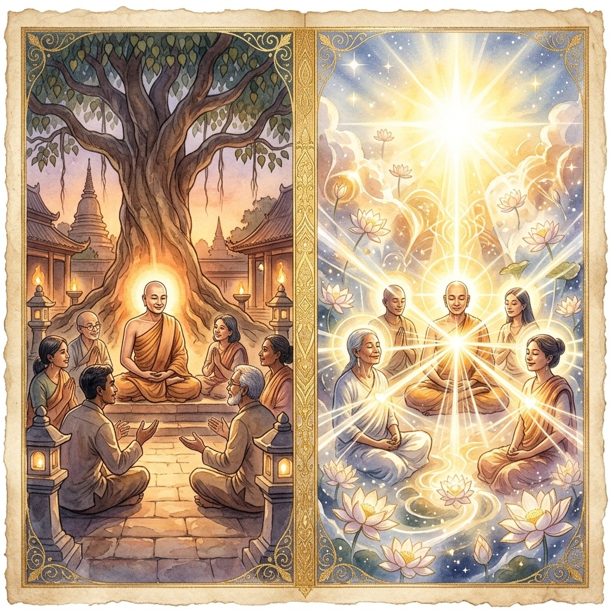
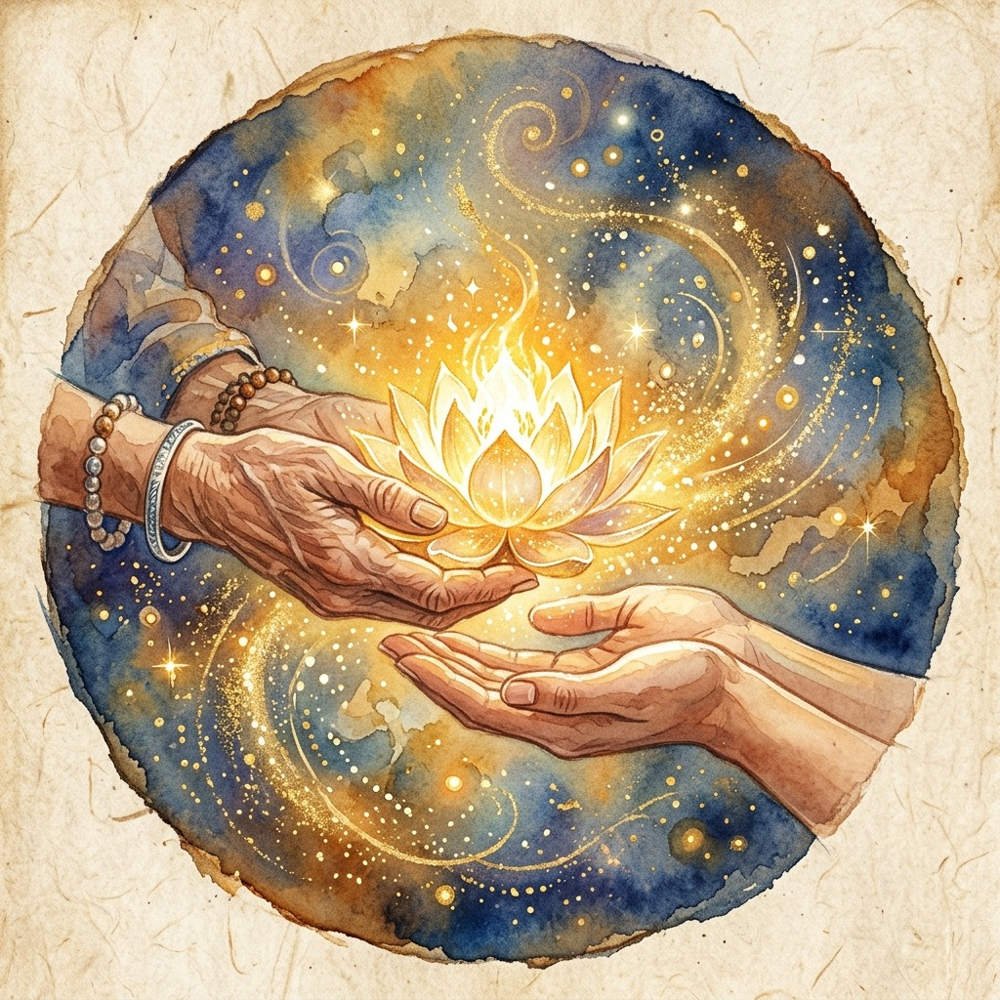
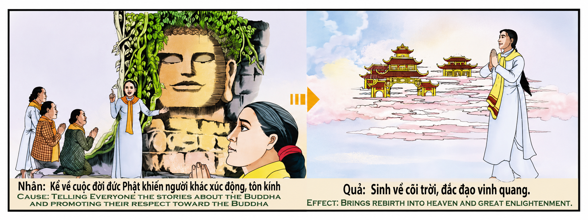

La Autopista del DharmaThe Dharma HighwayL'autostrada del Dharma佛法公路طريق دارما السريعШоссе ДхармыDer Dharma HighwayL'autoroute du Dharmaダルマ・ハイウェイA Rodovia do DharmaĐại lộ Phật pháp
Enseñar la verdad que uno ve no es imponer un dogma, sino encender un fuego en el corazón del otro. La mejor manera de aprender aquello que anhelamos comprender es convertirnos en el canal a través del cual fluye esa enseñanza hacia los demás; esa es la autopista más rápida hacia la iluminación. Cuando compartimos la sabiduría con amor puro, paciencia infinita y buena intención, la luz que ofrecemos no solo ilumina el camino ajeno, sino que disuelve instantáneamente las sombras de nuestra propia ignorancia, revelando la verdad que siempre habitó en nosotros.Teaching the truth that one sees is not imposing a dogma, but rather lighting a fire in the heart of another. The best way to learn what we long to understand is to become the channel through which that teaching flows to others; that is the fastest highway to enlightenment. When we share wisdom with pure love, infinite patience and good intention, the light we offer not only illuminates the path of others, but instantly dissolves the shadows of our own ignorance, revealing the truth that has always lived within us.Insegnare la verità che si vede non è imporre un dogma, ma piuttosto accendere un fuoco nel cuore dell'altro. Il modo migliore per apprendere ciò che desideriamo comprendere è diventare il canale attraverso il quale quell'insegnamento fluisce verso gli altri; questa è l’autostrada più veloce verso l’illuminazione. Quando condividiamo la saggezza con amore puro, pazienza infinita e buone intenzioni, la luce che offriamo non solo illumina il cammino degli altri, ma dissolve istantaneamente le ombre della nostra stessa ignoranza, rivelando la verità che ha sempre vissuto dentro di noi.教导一个人看到的真理并不是强加一种教条，而是在另一个人的心中点燃一把火。学习我们渴望理解的东西的最好方法就是成为将教导传递给他人的渠道；这是通往启蒙的最快高速公路。当我们以纯粹的爱、无限的耐心和善意分享智慧时，我们提供的光明不仅照亮了他人的道路，而且立即消解了我们自己无知的阴影，揭示了一直存在于我们内心的真理。إن تعليم الحقيقة التي يراها المرء لا يعني فرض عقيدة، بل هو إشعال نار في قلب الآخر. إن أفضل طريقة لتعلم ما نتوق إلى فهمه هو أن نصبح القناة التي يتدفق من خلالها هذا التعليم إلى الآخرين؛ هذا هو أسرع طريق للتنوير. عندما نتشارك الحكمة مع الحب النقي والصبر اللامتناهي والنية الطيبة، فإن الضوء الذي نقدمه لا ينير طريق الآخرين فحسب، بل يذيب على الفور ظلال جهلنا، ويكشف عن الحقيقة التي عاشت دائمًا بداخلنا.Учить истине, которую видит один, — это не навязывать догму, а скорее зажигать огонь в сердце другого. Лучший способ узнать то, что мы хотим понять, — это стать каналом, через который это учение передается другим; это самый быстрый путь к просветлению. Когда мы делимся мудростью с чистой любовью, бесконечным терпением и добрыми намерениями, свет, который мы предлагаем, не только освещает путь других, но мгновенно растворяет тени нашего собственного невежества, раскрывая истину, которая всегда жила внутри нас.Die Wahrheit zu lehren, die man sieht, bedeutet nicht, ein Dogma aufzudrängen, sondern eher ein Feuer im Herzen eines anderen zu entfachen. Der beste Weg zu lernen, was wir verstehen wollen, besteht darin, der Kanal zu werden, durch den diese Lehre an andere weitergegeben wird. Das ist der schnellste Weg zur Erleuchtung. Wenn wir Weisheit mit reiner Liebe, unendlicher Geduld und guten Absichten teilen, erhellt das Licht, das wir anbieten, nicht nur den Weg anderer, sondern löst sofort die Schatten unserer eigenen Unwissenheit auf und enthüllt die Wahrheit, die schon immer in uns gelebt hat.Enseigner la vérité que l’on voit, ce n’est pas imposer un dogme, mais plutôt allumer un feu dans le cœur d’autrui. La meilleure façon d’apprendre ce que nous aspirons à comprendre est de devenir le canal par lequel cet enseignement circule vers les autres ; c’est l’autoroute la plus rapide vers l’illumination. Lorsque nous partageons la sagesse avec un amour pur, une patience infinie et de bonnes intentions, la lumière que nous offrons non seulement éclaire le chemin des autres, mais dissout instantanément les ombres de notre propre ignorance, révélant la vérité qui a toujours vécu en nous.人が見た真実を教えることは、教義を押し付けるのではなく、むしろ人の心に火を灯すことです。私たちが理解したいと切望していることを学ぶための最良の方法は、その教えが他の人に流れるチャネルになることです。それが悟りへの最速の高速道路です。私たちが純粋な愛、無限の忍耐、そして善意をもって知恵を分かち合うとき、私たちが提供する光は他の人の道を照らすだけでなく、私たち自身の無知の影を即座に溶かし、私たちの中に常に生きてきた真実を明らかにします。Ensinar a verdade que se vê não é impor um dogma, mas sim acender um fogo no coração do outro. A melhor maneira de aprender o que desejamos compreender é tornar-nos o canal através do qual esse ensinamento flui para os outros; esse é o caminho mais rápido para a iluminação. Quando compartilhamos sabedoria com amor puro, paciência infinita e boas intenções, a luz que oferecemos não apenas ilumina o caminho dos outros, mas dissolve instantaneamente as sombras da nossa própria ignorância, revelando a verdade que sempre viveu dentro de nós.Dạy sự thật mà người ta nhìn thấy không phải là áp đặt một giáo điều mà là thắp lên ngọn lửa trong trái tim người khác. Cách tốt nhất để học những gì chúng ta mong muốn hiểu là trở thành kênh truyền tải lời dạy đó đến người khác; đó là con đường nhanh nhất dẫn đến giác ngộ. Khi chúng ta chia sẻ trí tuệ với tình yêu thuần khiết, sự kiên nhẫn vô hạn và ý định tốt, ánh sáng chúng ta trao đi không chỉ soi đường cho người khác mà ngay lập tức làm tan biến bóng tối vô minh của chính chúng ta, bộc lộ sự thật luôn tồn tại trong chúng ta.
El relieve original del templo nos presenta una escena de profunda trascendencia espiritual: a la izquierda, bajo la sombra de un árbol sagrado, un maestro comparte las enseñanzas con un grupo de discípulos en actitud de humilde y activo diálogo; a la derecha, la consecuencia ineludible de esa siembra de sabiduría se manifiesta en figuras coronadas de luz, ascendiendo hacia planos de existencia superior y bañadas por un resplandor celestial. La causa es la transmisión pura del Dharma; el efecto es el despertar y la liberación espiritual.
Para comprender este karma en toda su hondura, es crucial superar las interpretaciones simplistas que reducen la enseñanza espiritual a una transacción mecánica o a un acto de proselitismo. La ley kármica aquí descrita no premia la mera repetición de palabras sagradas, sino que opera sobre una de las dinámicas más poderosas de la evolución de la conciencia: el principio de que la mejor manera de integrar una verdad en nuestra propia alma es enseñarla con amor y paciencia a otros. Enseñar lo que anhelamos aprender no es un acto de soberbia, sino una autopista acelerada hacia el autodescubrimiento.
La primera dimensión de esta enseñanza es la paradoja de la docencia espiritual como espejo de auto-corrección. Cuando nos sentamos frente a otro con el deseo sincero de aliviar su confusión, nos vemos obligados a clarificar nuestra propia mente. Al formular las verdades eternas para que otros las comprendan, depuramos nuestros propios sesgos de planificación mental, desarmamos los sofismas del ego y ordenamos el caos interior. La palabra que sale de nuestra boca con la intención de guiar al prójimo rebota en el espacio sutil y penetra en nuestro propio oído con una fuerza multiplicada, disolviendo nuestra propia ignorancia. El maestro honesto descubre que, en realidad, cada lección dada es una autopista misil dirigida a su propio despertar.
La segunda dimensión se centra en el vehículo del amor, la buena intención y la paciencia infinita. Compartir la verdad sin estos tres pilares convierte la enseñanza en un arma del ego, en un pedestal de soberbia intelectual que genera karma de oscuridad. El karma no juzga la brillantez de la elocuencia, sino la pureza del canal. Si enseñamos para impresionar, para dominar o por apego al reconocimiento, el puente de luz se quiebra. Pero cuando nos acercamos al buscador con compasión, sosteniendo sus dudas con paciencia y respetando su propio ritmo de comprensión, creamos una resonancia kármica de infinita luminosidad. La paciencia con la que acogemos los tropiezos del otro es la misma paciencia con la que el universo suavizará las caídas de nuestro propio destino.
La tercera dimensión resalta la sacralidad del debate y la búsqueda conjunta de la verdad. El Buda histórico no exigía una fe ciega; al contrario, invitaba al cuestionamiento y al debate constructivo. Enseñar la verdad no es imponer un dogma rígido, sino encender una antorcha y permitir que el otro la examine bajo su propia luz. Generar un debate honesto y libre es sembrar la semilla del discernimiento en el tejido cósmico. Quien fomenta la libertad intelectual de sus discípulos destruye el karma de la necedad y la ceguera dogmática, cosechando en sus vidas futuras una mente extraordinariamente clara, intuitiva y capaz de percibir las sutilezas de la realidad sin velos.
La cuarta dimensión nos revela la luminosidad del efecto kármico como un reflejo de la belleza interior. El renacimiento en mundos de luz y la consecución de una forma radiante no son premios externos concedidos por una deidad complacida. Son la consecuencia física y energética de haber habitado en frecuencias de sabiduría y amor durante la vida terrenal. Una mente que se ha purificado a sí misma sirviendo de canal para la liberación de otras almas se vuelve inherentemente magnética y armoniosa. Su voz adquiere el tono del oro porque sus palabras siempre buscaron sanar; su presencia se vuelve luminosa porque su paso por el mundo no dejó sombras de dogmatismo, sino senderos abiertos hacia la liberación universal.
The original relief of the temple presents us with a scene of profound spiritual transcendence: on the left, under the shade of a sacred tree, a teacher shares the teachings with a group of disciples in an attitude of humble and active dialogue; On the right, the inevitable consequence of this sowing of wisdom is manifested in figures crowned with light, ascending towards planes of higher existence and bathed in a celestial radiance. The cause is the pure transmission of the Dharma; the effect is spiritual awakening and liberation.
To understand this karma in its full depth, it is crucial to overcome simplistic interpretations that reduce spiritual teaching to a mechanical transaction or an act of proselytism. The karmic law described here does not reward the mere repetition of sacred words, but rather operates on one of the most powerful dynamics of the evolution of consciousness: the principle that the best way to integrate a truth into our own soul is to lovingly and patiently teach it to others. Teaching what we long to learn is not an act of arrogance, but rather an accelerated highway toward self-discovery. The first dimension of this teaching is the paradox of spiritual teaching as a self-correcting mirror. When we sit across from another with the sincere desire to alleviate their confusion, we are forced to clarify our own mind. By formulating eternal truths for others to understand, we purify our own mental planning biases, dismantle the sophistry of the ego, and order the chaos within. The word that comes out of our mouth with the intention of guiding others bounces in the subtle space and penetrates our own ear with multiplied force, dissolving our own ignorance. The honest teacher discovers that, in reality, each lesson given is a highway missile aimed at his own awakening. The second dimension focuses on the vehicle of love, good intention and infinite patience. Sharing the truth without these three pillars turns teaching into a weapon of the ego, a pedestal of intellectual arrogance that generates karma of darkness. Karma does not judge the brilliance of eloquence, but the purity of the channel. If we teach to impress, to dominate or out of attachment to recognition, the bridge of light breaks. But when we approach the seeker with compassion, holding their doubts with patience and respecting their own pace of understanding, we create a karmic resonance of infinite luminosity. The patience with which we welcome the stumbles of others is the same patience with which the universe will soften the falls of our own destiny. The third dimension highlights the sacredness of the debate and the joint search for truth. The historical Buddha did not demand blind faith; On the contrary, it invited questioning and constructive debate. Teaching the truth is not imposing a rigid dogma, but rather lighting a torch and allowing the other to examine it in their own light. Generating an honest and free debate is sowing the seed of discernment in the cosmic fabric. He who fosters the intellectual freedom of his disciples destroys the karma of foolishness and dogmatic blindness, reaping in their future lives an extraordinarily clear, intuitive mind capable of perceiving the subtleties of reality without veils. The fourth dimension reveals to us the luminosity of the karmic effect as a reflection of inner beauty. Rebirth into worlds of light and the attainment of a radiant form are not external rewards bestowed by a pleased deity. They are the physical and energetic consequence of having inhabited frequencies of wisdom and love during earthly life. A mind that has purified itself by serving as a channel for the liberation of other souls becomes inherently magnetic and harmonious. His voice takes on the tone of gold because his words always sought to heal; His presence becomes luminous because his passage through the world did not leave shadows of dogmatism, but rather open paths towards universal liberation.
Il rilievo originario del tempio ci presenta una scena di profonda trascendenza spirituale: a sinistra, all'ombra di un albero sacro, un maestro condivide gli insegnamenti con un gruppo di discepoli in atteggiamento di dialogo umile e attivo; A destra, l'inevitabile conseguenza di questa semina di saggezza si manifesta in figure incoronate di luce, che ascendono verso piani di esistenza superiore e immerse in uno splendore celestiale. La causa è la pura trasmissione del Dharma; l'effetto è il risveglio spirituale e la liberazione.
Per comprendere questo karma nella sua piena profondità, è fondamentale superare le interpretazioni semplicistiche che riducono l’insegnamento spirituale a una transazione meccanica o a un atto di proselitismo. La legge karmica qui descritta non premia la mera ripetizione di parole sacre, ma opera piuttosto su una delle dinamiche più potenti dell'evoluzione della coscienza: il principio secondo cui il modo migliore per integrare una verità nella propria anima è insegnarla agli altri con amore e pazienza. Insegnare ciò che desideriamo imparare non è un atto di arroganza, ma piuttosto un’autostrada accelerata verso la scoperta di sé. La prima dimensione di questo insegnamento è il paradosso dell'insegnamento spirituale come specchio autocorrettivo. Quando ci sediamo di fronte a un altro con il sincero desiderio di alleviare la sua confusione, siamo costretti a chiarire la nostra mente. Formulando verità eterne affinché gli altri possano comprenderle, purifichiamo i nostri pregiudizi di pianificazione mentale, smantelliamo i sofismi dell’ego e ordiniamo il caos interiore. La parola che esce dalla nostra bocca con l'intenzione di guidare gli altri rimbalza nello spazio sottile e penetra nel nostro orecchio con forza moltiplicata, dissolvendo la nostra stessa ignoranza. L'insegnante onesto scopre che, in realtà, ogni lezione impartita è un missile autostradale puntato sul proprio risveglio. La seconda dimensione si concentra sul veicolo dell'amore, della buona intenzione e della pazienza infinita. Condividere la verità senza questi tre pilastri trasforma l’insegnamento in un’arma dell’ego, un piedistallo dell’arroganza intellettuale che genera karma dell’oscurità. Il karma non giudica la brillantezza dell'eloquenza, ma la purezza del canale. Se insegniamo a impressionare, a dominare o per attaccamento al riconoscimento, il ponte di luce si rompe. Ma quando ci avviciniamo al ricercatore con compassione, sopportando i suoi dubbi con pazienza e rispettando il suo ritmo di comprensione, creiamo una risonanza karmica di infinita luminosità. La pazienza con cui accogliamo gli inciampi degli altri è la stessa pazienza con cui l'universo attenuerà le cadute del nostro stesso destino. La terza dimensione evidenzia la sacralità del dibattito e la ricerca congiunta della verità. Il Buddha storico non esigeva una fede cieca; Al contrario, ha invitato a interrogarsi e a un dibattito costruttivo. Insegnare la verità non è imporre un dogma rigido, ma piuttosto accendere una fiaccola e permettere all'altro di esaminarla alla propria luce. Generare un dibattito onesto e libero significa gettare il seme del discernimento nel tessuto cosmico. Colui che favorisce la libertà intellettuale dei suoi discepoli distrugge il karma della stoltezza e della cecità dogmatica, raccogliendo nelle loro vite future una mente straordinariamente chiara, intuitiva, capace di percepire senza veli le sottigliezze della realtà. La quarta dimensione ci rivela la luminosità dell'effetto karmico come riflesso della bellezza interiore. La rinascita in mondi di luce e il raggiungimento di una forma radiosa non sono ricompense esterne conferite da una divinità compiaciuta. Sono la conseguenza fisica ed energetica dell'aver abitato frequenze di saggezza e amore durante la vita terrena. Una mente che si è purificata fungendo da canale per la liberazione di altre anime diventa intrinsecamente magnetica e armoniosa. La sua voce assume il tono dell'oro perché le sue parole cercavano sempre di guarire; La sua presenza diventa luminosa perché il suo passaggio nel mondo non ha lasciato ombre di dogmatismo, ma ha aperto vie verso la liberazione universale.
寺庙的原始浮雕为我们呈现了一幅深刻的精神超越的景象：左边，一棵圣树的树荫下，一位老师以谦虚、主动的对话态度与一群弟子分享教义；在右边，这种智慧播种的不可避免的结果表现为戴着光冠的人物，上升到更高存在的层面并沐浴在天国的光芒中。因是法清净传承；其效果是精神的觉醒和解放。
为了全面深入地理解这种业力，克服将灵性教导简化为机械交易或传教行为的简单化解释至关重要。这里描述的业力法则并不奖励仅仅重复神圣的话语，而是在意识进化的最强大的动力之一上运作：将真理融入我们自己灵魂的最佳方式的原则是充满爱心和耐心地将它教给他人。教授我们渴望学习的东西并不是一种傲慢的行为，而是一条加速自我发现的高速公路。 该教义的第一个维度是灵性教义作为自我校正镜子的悖论。当我们坐在另一个人对面，真诚地希望减轻他们的困惑时，我们就被迫澄清自己的想法。通过阐述永恒的真理供他人理解，我们净化了自己的思维计划偏见，瓦解了自我的诡辩，并整理了内心的混乱。从我们口中说出、意图指导他人的话语，在微妙的空间中弹跳，以倍增的力量穿透我们自己的耳朵，消解我们自己的无明。诚实的老师发现，实际上，每一节课都是一枚旨在他自己觉醒的高速公路导弹。 第二个维度侧重于爱、善意和无限耐心的载体。在没有这三个支柱的情况下分享真理会使教学变成自我的武器，成为产生黑暗业力的知识傲慢的基座。因果报应不在于口才的高明，而在于渠道的清净。如果我们教的是给人留下深刻印象、支配一切或出于对认可的执着，那么光之桥就会断裂。但是，当我们以慈悲的心接近寻求者，耐心地接受他们的怀疑并尊重他们自己的理解速度时，我们就会创造出无限光明的业力共鸣。我们以耐心迎接别人的绊脚石，宇宙也以同样的耐心来软化我们自己命运的跌倒。 第三个维度突出了辩论的神圣性和对真理的共同追求。历史上的佛陀并不要求盲目信仰，而是要求人们盲目信仰。相反，它引发了质疑和建设性辩论。教导真理并不是强加僵化的教条，而是点燃火炬，让别人用自己的眼光来审视它。进行诚实和自由的辩论正在播下宇宙结构中洞察力的种子。培养弟子们思想自由的人，会摧毁愚蠢和教条式盲目的业力，在未来的生活中收获异常清晰、直觉的心灵，能够毫无遮掩地感知现实的微妙之处。 第四维度向我们揭示了业力效应的光度作为内在美的反映。重生到光的世界和获得光辉的形体并不是高兴的神灵所赐予的外在奖励。它们是在尘世生活中拥有智慧和爱的频率所产生的身体和能量的结果。通过充当其他灵魂解放的渠道来净化自己的心灵，变得具有内在的磁性和和谐性。他的声音呈现出金子般的音色，因为他的话语总是寻求治愈；他的存在变得光芒四射，因为他走过的世界没有留下教条主义的阴影，而是开辟了通向普遍解放的道路。
يقدم لنا النقش الأصلي للمعبد مشهدًا للسمو الروحي العميق: على اليسار، تحت ظل شجرة مقدسة، يشارك المعلم التعاليم مع مجموعة من التلاميذ في موقف من الحوار المتواضع والنشط؛ على اليمين، تتجلى النتيجة الحتمية لزرع الحكمة هذا في شخصيات متوجة بالنور، تصعد نحو مستويات الوجود الأعلى وتغمرها إشعاع سماوي. السبب هو النقل النقي للدارما؛ والنتيجة هي الصحوة الروحية والتحرر.
لفهم هذه الكارما بعمقها الكامل، من الضروري التغلب على التفسيرات التبسيطية التي تقلل من التعاليم الروحية إلى معاملة ميكانيكية أو عمل من أعمال التبشير. إن قانون الكارما الموصوف هنا لا يكافئ مجرد تكرار الكلمات المقدسة، بل يعمل على واحدة من أقوى ديناميكيات تطور الوعي: المبدأ القائل بأن أفضل طريقة لدمج الحقيقة في روحنا هي تعليمها للآخرين بمحبة وصبر. إن تدريس ما نرغب في تعلمه ليس عملاً من أعمال الغطرسة، بل هو بالأحرى طريق سريع نحو اكتشاف الذات. البعد الأول لهذا التعليم هو مفارقة التعليم الروحي كمرآة ذاتية التصحيح. عندما نجلس أمام شخص آخر ولدينا رغبة صادقة في التخفيف من ارتباكه، فإننا نضطر إلى توضيح أذهاننا. ومن خلال صياغة الحقائق الأبدية لكي يفهمها الآخرون، فإننا نطهر تحيزاتنا في التخطيط العقلي، ونفكك سفسطة الأنا، وننظم الفوضى بداخلنا. الكلمة التي تخرج من فمنا بهدف إرشاد الآخرين ترتد في الفضاء الخفي وتخترق أذننا بقوة مضاعفة، وتذيب جهلنا. يكتشف المعلم الصادق أن كل درس يُعطى، في الواقع، هو بمثابة صاروخ سريع موجه نحو صحوته. ويركز البعد الثاني على مركبة الحب والنية الطيبة والصبر اللامتناهي. إن مشاركة الحقيقة بدون هذه الركائز الثلاث يحول التدريس إلى سلاح للأنا، وقاعدة من الغطرسة الفكرية التي تولد كارما الظلام. الكارما لا تحكم على تألق البلاغة، بل على نقاء القناة. إذا علمنا كيف نثير الإعجاب، أو نسيطر، أو بعيدًا عن التعلق بالاعتراف، ينكسر جسر النور. لكن عندما نقترب من الباحث بتعاطف، ونحمل شكوكه بالصبر ونحترم وتيرة فهمه، فإننا نخلق صدى كرميًا من سطوع لا نهائي. إن الصبر الذي نستقبل به عثرات الآخرين هو نفس الصبر الذي به يخفف الكون من عثرات مصيرنا. ويسلط البعد الثالث الضوء على قدسية النقاش والبحث المشترك عن الحقيقة. لم يطالب بوذا التاريخي بالإيمان الأعمى؛ بل على العكس من ذلك، فقد دعا إلى التساؤل والنقاش البناء. إن تعليم الحقيقة لا يعني فرض عقيدة جامدة، بل يعني إيقاد شعلة والسماح للآخر بفحصها في ضوء رؤيتهم. إن توليد نقاش صادق وحر هو بمثابة زرع بذور التمييز في النسيج الكوني. إن من يعزز الحرية الفكرية لتلاميذه يدمر كارما الحماقة والعمى العقائدي، ويحصد في حياتهم المستقبلية عقلًا واضحًا وحدسيًا بشكل غير عادي قادر على إدراك دقائق الواقع دون حجاب. ويكشف لنا البعد الرابع ضياء تأثير الكارما باعتباره انعكاسًا للجمال الداخلي. إن إعادة الميلاد في عوالم النور والحصول على شكل مشع ليست مكافآت خارجية يمنحها إله مسرور. إنها النتيجة الجسدية والحيوية لامتلاك ترددات الحكمة والحب خلال الحياة الأرضية. إن العقل الذي ينقي نفسه من خلال العمل كقناة لتحرير النفوس الأخرى يصبح بطبيعته مغناطيسيًا ومتناغمًا. يأخذ صوته نبرة الذهب لأن كلماته تسعى دائمًا إلى الشفاء؛ يصبح حضوره مضيئا لأن مروره عبر العالم لم يترك ظلالا من الدوغمائية، بل طرقا مفتوحة نحو التحرر الشامل.
Оригинальный рельеф храма представляет нам сцену глубокого духовного превосходства: слева, в тени священного дерева, учитель делится учениями с группой учеников в позиции смиренного и активного диалога; Справа неизбежное последствие этого посева мудрости проявляется в фигурах, увенчанных светом, восходящих к планам высшего существования и купающихся в небесном сиянии. Причина – чистая передача Дхармы; эффект — духовное пробуждение и освобождение.
Чтобы понять эту карму во всей ее глубине, крайне важно преодолеть упрощенные интерпретации, которые сводят духовное учение к механической операции или акту прозелитизма. Описанный здесь кармический закон не вознаграждает простое повторение священных слов, а, скорее, действует на основе одной из самых мощных движущих сил эволюции сознания: принципа, согласно которому лучший способ интегрировать истину в нашу собственную душу — это с любовью и терпеливо учить ей других. Обучение тому, чему мы стремимся научиться, — это не акт высокомерия, а, скорее, ускоренный путь к самопознанию. Первым измерением этого учения является парадокс духовного учения как самокорректирующегося зеркала. Когда мы сидим напротив другого человека с искренним желанием облегчить его замешательство, мы вынуждены прояснять собственный разум. Формулируя вечные истины для понимания других, мы очищаем наши собственные предубеждения в мысленном планировании, разрушаем софистику эго и упорядочиваем внутренний хаос. Слово, выходящее из наших уст с намерением направить других, отскакивает в тонком пространстве и с умноженной силой проникает в наше ухо, растворяя наше собственное невежество. Честный учитель обнаруживает, что на самом деле каждый урок — это ракета, нацеленная на его собственное пробуждение. Второе измерение сосредоточено на средстве любви, добрых намерений и безграничном терпении. Распространение истины без этих трех столпов превращает обучение в оружие эго, пьедестал интеллектуального высокомерия, порождающий темную карму. Карма судит не блеск красноречия, а чистоту канала. Если мы научим производить впечатление, доминировать или отказываться от признания, мост света разрывается. Но когда мы подходим к ищущему с состраданием, терпеливо сдерживая его сомнения и уважая его собственный темп понимания, мы создаём кармический резонанс бесконечной светимости. Терпение, с которым мы приветствуем неудачи других, — это то же терпение, с которым Вселенная смягчает падения нашей собственной судьбы. Третье измерение подчеркивает священность дебатов и совместный поиск истины. Исторический Будда не требовал слепой веры; Напротив, это вызвало вопросы и конструктивные дебаты. Обучать истине — это не навязывать жесткую догму, а скорее зажигать факел и позволять другим исследовать ее в своем собственном свете. Создание честных и свободных дебатов — это сеяние семян проницательности в космической ткани. Тот, кто воспитывает интеллектуальную свободу своих учеников, разрушает карму глупости и догматической слепоты, пожиная в их будущих жизнях необычайно ясный, интуитивный ум, способный воспринимать тонкости реальности без завес. Четвертое измерение открывает нам сияние кармического эффекта как отражение внутренней красоты. Перерождение в мирах света и обретение сияющей формы не являются внешними наградами, дарованными довольным божеством. Они являются физическим и энергетическим следствием проживания частот мудрости и любви в течение земной жизни. Ум, который очистил себя, служа каналом освобождения других душ, становится по своей сути притягательным и гармоничным. Его голос приобретает оттенок золота, потому что его слова всегда стремились исцелить; Его присутствие становится ярким, потому что его путешествие по миру не оставило теней догматизма, а скорее открыло пути к всеобщему освобождению.
Das ursprüngliche Relief des Tempels präsentiert uns eine Szene tiefgreifender spiritueller Transzendenz: Auf der linken Seite teilt ein Lehrer im Schatten eines heiligen Baumes die Lehren mit einer Gruppe von Schülern in einer Haltung des demütigen und aktiven Dialogs; Auf der rechten Seite manifestiert sich die unvermeidliche Konsequenz dieser Aussaat von Weisheit in Gestalten, die mit Licht gekrönt sind, zu Ebenen höherer Existenz aufsteigen und in ein himmlisches Strahlen getaucht sind. Die Ursache ist die reine Übermittlung des Dharma; Die Wirkung ist spirituelles Erwachen und Befreiung.
Um dieses Karma in seiner ganzen Tiefe zu verstehen, ist es entscheidend, vereinfachende Interpretationen zu überwinden, die spirituelle Lehren auf eine mechanische Transaktion oder einen Akt der Proselytenmacherei reduzieren. Das hier beschriebene karmische Gesetz belohnt nicht die bloße Wiederholung heiliger Worte, sondern wirkt auf eine der mächtigsten Dynamiken der Bewusstseinsentwicklung: das Prinzip, dass der beste Weg, eine Wahrheit in unsere eigene Seele zu integrieren, darin besteht, sie anderen liebevoll und geduldig zu lehren. Das zu lehren, was wir lernen wollen, ist kein Akt der Arroganz, sondern vielmehr ein beschleunigter Weg zur Selbstfindung. Die erste Dimension dieser Lehre ist das Paradox der spirituellen Lehre als sich selbst korrigierender Spiegel. Wenn wir einem anderen gegenübersitzen und den aufrichtigen Wunsch haben, seine Verwirrung zu lindern, sind wir gezwungen, unseren eigenen Geist zu klären. Indem wir ewige Wahrheiten formulieren, damit andere sie verstehen, reinigen wir unsere eigenen mentalen Planungsvoreingenommenheiten, bauen die Sophistik des Egos ab und ordnen das Chaos in uns. Das Wort, das aus unserem Mund mit der Absicht kommt, andere zu führen, prallt im subtilen Raum ab und dringt mit vervielfachter Kraft in unser eigenes Ohr ein und löst unsere eigene Unwissenheit auf. Der ehrliche Lehrer entdeckt, dass in Wirklichkeit jede Unterrichtsstunde eine Autobahnrakete ist, die auf sein eigenes Erwachen abzielt. Die zweite Dimension konzentriert sich auf das Vehikel der Liebe, der guten Absicht und der unendlichen Geduld. Das Teilen der Wahrheit ohne diese drei Säulen macht den Unterricht zu einer Waffe des Egos, zu einem Sockel intellektueller Arroganz, der Karma der Dunkelheit erzeugt. Karma beurteilt nicht die Brillanz der Beredsamkeit, sondern die Reinheit des Kanals. Wenn wir lehren, zu beeindrucken, zu dominieren oder aus Anhaftung an Anerkennung herauszukommen, bricht die Brücke des Lichts. Aber wenn wir mit Mitgefühl auf den Suchenden zugehen, seine Zweifel mit Geduld ertragen und sein eigenes Tempo des Verstehens respektieren, erzeugen wir eine karmische Resonanz von unendlicher Leuchtkraft. Die Geduld, mit der wir die Fehler anderer aufnehmen, ist dieselbe Geduld, mit der das Universum die Stürze unseres eigenen Schicksals mildern wird. Die dritte Dimension unterstreicht die Heiligkeit der Debatte und die gemeinsame Suche nach der Wahrheit. Der historische Buddha verlangte keinen blinden Glauben; Im Gegenteil, es lud zum Hinterfragen und zur konstruktiven Debatte ein. Die Wahrheit zu lehren bedeutet nicht, ein starres Dogma aufzuzwingen, sondern vielmehr, eine Fackel anzuzünden und dem anderen zu erlauben, sie in seinem eigenen Licht zu betrachten. Eine ehrliche und freie Debatte anzustoßen bedeutet, den Samen der Unterscheidung in das kosmische Gefüge zu säen. Wer die intellektuelle Freiheit seiner Schüler fördert, zerstört das Karma der Dummheit und dogmatischen Blindheit und erntet in ihren zukünftigen Leben einen außergewöhnlich klaren, intuitiven Geist, der in der Lage ist, die Feinheiten der Realität ohne Schleier wahrzunehmen. Die vierte Dimension offenbart uns die Leuchtkraft der karmischen Wirkung als Spiegelbild innerer Schönheit. Die Wiedergeburt in Welten des Lichts und das Erreichen einer strahlenden Form sind keine äußeren Belohnungen, die von einer erfreuten Gottheit verliehen werden. Sie sind die physische und energetische Folge davon, dass wir während des Erdenlebens Frequenzen der Weisheit und Liebe bewohnt haben. Ein Geist, der sich selbst gereinigt hat, indem er als Kanal für die Befreiung anderer Seelen diente, wird von Natur aus magnetisch und harmonisch. Seine Stimme nimmt den Ton von Gold an, weil seine Worte immer auf Heilung abzielten; Seine Gegenwart wird leuchtend, weil sein Weg durch die Welt keine Schatten von Dogmatismus hinterließ, sondern vielmehr Wege zur universellen Befreiung ebnete.
Le relief original du temple nous présente une scène de profonde transcendance spirituelle : à gauche, à l'ombre d'un arbre sacré, un professeur partage les enseignements avec un groupe de disciples dans une attitude de dialogue humble et actif ; A droite, la conséquence inévitable de cet ensemencement de sagesse se manifeste par des figures couronnées de lumière, montant vers des plans d'existence supérieurs et baignées d'un rayonnement céleste. La cause est la pure transmission du Dharma ; l'effet est l'éveil spirituel et la libération.
Pour comprendre ce karma dans toute sa profondeur, il est crucial de dépasser les interprétations simplistes qui réduisent l’enseignement spirituel à une transaction mécanique ou à un acte de prosélytisme. La loi karmique décrite ici ne récompense pas la simple répétition de paroles sacrées, mais opère plutôt sur l'une des dynamiques les plus puissantes de l'évolution de la conscience : le principe selon lequel la meilleure façon d'intégrer une vérité dans notre propre âme est de l'enseigner avec amour et patience aux autres. Enseigner ce que nous aspirons à apprendre n’est pas un acte d’arrogance, mais plutôt une voie accélérée vers la découverte de soi. La première dimension de cet enseignement est le paradoxe de l'enseignement spirituel comme miroir auto-correcteur. Lorsque nous nous asseyons en face d’un autre avec le désir sincère d’atténuer sa confusion, nous sommes obligés de clarifier notre propre esprit. En formulant des vérités éternelles que les autres peuvent comprendre, nous purifions nos propres préjugés de planification mentale, démantelons les sophismes de l’ego et ordonnons le chaos intérieur. Le mot qui sort de notre bouche avec l’intention de guider les autres rebondit dans l’espace subtil et pénètre notre propre oreille avec une force multipliée, dissolvant notre propre ignorance. L’honnête professeur découvre qu’en réalité chaque leçon donnée est un missile routier visant son propre éveil. La deuxième dimension se concentre sur le véhicule de l'amour, de la bonne intention et de la patience infinie. Partager la vérité sans ces trois piliers transforme l’enseignement en une arme de l’ego, un piédestal de l’arrogance intellectuelle qui génère le karma des ténèbres. Le Karma ne juge pas l'éclat de l'éloquence, mais la pureté du canal. Si nous enseignons à impressionner, à dominer ou par attachement à la reconnaissance, le pont de lumière se brise. Mais lorsque nous abordons le chercheur avec compassion, en tenant patiemment ses doutes et en respectant son propre rythme de compréhension, nous créons une résonance karmique d’une luminosité infinie. La patience avec laquelle nous accueillons les trébuchements des autres est la même patience avec laquelle l’univers adoucira les chutes de notre propre destinée. La troisième dimension met en évidence le caractère sacré du débat et de la recherche commune de la vérité. Le Bouddha historique n’exigeait pas une foi aveugle ; Au contraire, cela a invité au questionnement et au débat constructif. Enseigner la vérité, ce n’est pas imposer un dogme rigide, mais plutôt allumer une torche et permettre à l’autre de l’examiner sous son propre jour. Générer un débat honnête et libre, c’est semer la graine du discernement dans le tissu cosmique. Celui qui favorise la liberté intellectuelle de ses disciples détruit le karma de la folie et de la cécité dogmatique, récoltant dans leurs vies futures un esprit extraordinairement clair et intuitif, capable de percevoir les subtilités de la réalité sans voiles. La quatrième dimension nous révèle la luminosité de l'effet karmique comme reflet de la beauté intérieure. La renaissance dans des mondes de lumière et l’obtention d’une forme rayonnante ne sont pas des récompenses extérieures accordées par une divinité satisfaite. Ils sont la conséquence physique et énergétique d’avoir habité des fréquences de sagesse et d’amour au cours de la vie terrestre. Un esprit qui s’est purifié en servant de canal à la libération d’autres âmes devient intrinsèquement magnétique et harmonieux. Sa voix prend un ton doré car ses paroles ont toujours cherché à guérir ; Sa présence devient lumineuse car son passage à travers le monde n'a pas laissé d'ombres de dogmatisme, mais plutôt ouvert des chemins vers la libération universelle.
寺院のオリジナルのレリーフは、深い精神的超越の場面を私たちに見せてくれます。左側では、神聖な木の陰の下で、教師が謙虚で積極的な対話の姿勢で弟子のグループと教えを分かち合っています。右側では、この知恵の種まきの避けられない結果が、光を冠し、より高い存在の次元に向かって上昇し、天の輝きに浴する人物たちに現れています。その原因は純粋に仏法を伝えることです。その効果は霊的な目覚めと解放です。
このカルマを深く理解するには、霊的な教えを機械的な取引や改宗行為に貶めるような単純な解釈を克服することが重要です。ここで説明されているカルマの法則は、神聖な言葉を単に繰り返すだけでは報われません。むしろ、意識の進化の最も強力な力学の 1 つ、つまり真実を私たち自身の魂に統合する最善の方法は、愛情を持って辛抱強く他の人にそれを教えることであるという原則に基づいて作用します。私たちが学びたいと思っていることを教えることは傲慢な行為ではなく、むしろ自己発見への加速的な道です。 この教えの最初の側面は自己修正の鏡としてのスピリチュアルな教えの逆説です。相手の混乱を和らげたいという心からの願いを持って向かい合って座るとき、私たちは自分自身の心を明確にすることを余儀なくされます。他の人が理解できるように永遠の真実を定式化することによって、私たちは自分自身の精神的計画のバイアスを浄化し、エゴの詭弁を解体し、内部の混乱を秩序立てます。他者を導くつもりで口から出た言葉は、微細な空間で跳ね返り、何倍もの力で私たちの耳に侵入し、私たち自身の無知を溶かしていきます。正直な教師は、与えられる授業が、実は自分自身の覚醒を狙ったハイウェイミサイルであることに気づきます。 2 番目の次元は愛、善意、 無限の忍耐の乗り物に焦点を当てます。これら 3 つの柱なしに真実を共有すると、教えがエゴの武器、つまり闇のカルマを生み出す知的傲慢の台座に変わってしまいます。カルマは雄弁の素晴らしさを判断するのではなく、チャンネルの純粋さを判断します。もし私たちが、感動を与えること、支配すること、あるいは認識への執着を教えることを教えると、光の橋は壊れます。しかし、私たちが探求者に思いやりを持って近づき、忍耐強く疑いを持ち、彼ら自身の理解のペースを尊重するとき、私たちは無限の明るさのカルマ的共鳴を生み出します。私たちが他人のつまずきを受け入れる忍耐力は、宇宙が私たち自身の運命の転倒を和らげてくれる忍耐力と同じです。 3 番目の次元は議論の神聖さと真実の共同探求を強調します。歴史上の仏陀は盲目的な信仰を要求しませんでした。それどころか、疑問と建設的な議論を呼び起こしました。真実を教えることは、厳格な教義を押し付けるのではなく、むしろたいまつを灯し、相手が自分の光でそれを検討できるようにすることです。正直で自由な議論を生み出すことは、宇宙構造に識別力の種を蒔くことです。弟子たちの知的自由を促進する者は、愚かさと独断的な盲目というカルマを破壊し、ベールなしで現実の微妙さを知覚できる非常に明晰で直観的な心を彼らの将来の人生で刈り取ります。 4 番目の次元は、 私たちに内面の美しさの反映としてのカルマ効果の明るさを明らかにします。光の世界への再生や輝かしい姿の達成は、喜んだ神によって与えられる外的な報酬ではありません。それらは、地上での生活中に知恵と愛の周波数が宿ったことの肉体的かつエネルギー的な結果です。他の魂を解放するための経路として機能することで自らを浄化した心は、本質的に磁力があり、調和のとれたものになります。彼の声は黄金の音色を帯びています。なぜなら、彼の言葉は常に癒しを求めていたからです。彼の存在が光り輝くのは、彼の世界への歩みが教条主義の影を残さず、むしろ普遍的な解放への道を開いたからである。
O relevo original do templo apresenta-nos um cenário de profunda transcendência espiritual: à esquerda, à sombra de uma árvore sagrada, um professor partilha os ensinamentos com um grupo de discípulos numa atitude de diálogo humilde e ativo; À direita, a consequência inevitável desta sementeira de sabedoria manifesta-se em figuras coroadas de luz, ascendendo a planos de existência superior e banhadas por um esplendor celestial. A causa é a pura transmissão do Dharma; o efeito é o despertar espiritual e a libertação.
Para compreender este carma em toda a sua profundidade, é crucial superar interpretações simplistas que reduzem o ensino espiritual a uma transação mecânica ou a um ato de proselitismo. A lei cármica aqui descrita não recompensa a mera repetição de palavras sagradas, mas antes opera em uma das dinâmicas mais poderosas da evolução da consciência: o princípio de que a melhor maneira de integrar uma verdade em nossa própria alma é ensiná-la com amor e paciência aos outros. Ensinar o que desejamos aprender não é um ato de arrogância, mas sim um caminho acelerado em direção à autodescoberta. A primeira dimensão deste ensinamento é o paradoxo do ensino espiritual como um espelho autocorretivo. Quando nos sentamos diante de outra pessoa com o desejo sincero de aliviar sua confusão, somos forçados a esclarecer nossa própria mente. Ao formular verdades eternas para os outros compreenderem, purificamos os nossos próprios preconceitos de planeamento mental, desmantelamos o sofisma do ego e ordenamos o caos interior. A palavra que sai da nossa boca com a intenção de orientar os outros salta no espaço sutil e penetra em nosso próprio ouvido com força multiplicada, dissolvendo nossa própria ignorância. O professor honesto descobre que, na realidade, cada lição dada é um míssil rodoviário direcionado ao seu próprio despertar. A segunda dimensão centra-se no veículo do amor, da boa intenção e da paciência infinita. Compartilhar a verdade sem esses três pilares transforma o ensino em uma arma do ego, um pedestal de arrogância intelectual que gera carma de trevas. O Karma não julga o brilho da eloqüência, mas a pureza do canal. Se ensinarmos a impressionar, a dominar ou por apego ao reconhecimento, a ponte de luz se rompe. Mas quando abordamos o buscador com compaixão, sustentando suas dúvidas com paciência e respeitando seu próprio ritmo de compreensão, criamos uma ressonância cármica de luminosidade infinita. A paciência com que acolhemos os tropeços dos outros é a mesma paciência com que o universo amenizará as quedas do nosso próprio destino. A terceira dimensão destaca a sacralidade do debate e a busca conjunta pela verdade. O Buda histórico não exigiu fé cega; Pelo contrário, convidou ao questionamento e ao debate construtivo. Ensinar a verdade não é impor um dogma rígido, mas sim acender uma tocha e permitir que o outro a examine à sua própria luz. Gerar um debate honesto e livre é semear a semente do discernimento no tecido cósmico. Aquele que promove a liberdade intelectual de seus discípulos destrói o carma da tolice e da cegueira dogmática, colhendo em suas vidas futuras uma mente extraordinariamente clara, intuitiva, capaz de perceber sem véus as sutilezas da realidade. A quarta dimensão nos revela a luminosidade do efeito cármico como reflexo da beleza interior. O renascimento em mundos de luz e a obtenção de uma forma radiante não são recompensas externas concedidas por uma divindade satisfeita. São a consequência física e energética de termos habitado frequências de sabedoria e amor durante a vida terrena. Uma mente que se purificou servindo como canal para a libertação de outras almas torna-se inerentemente magnética e harmoniosa. Sua voz ganha tom dourado porque suas palavras sempre buscaram curar; A sua presença torna-se luminosa porque a sua passagem pelo mundo não deixou sombras de dogmatismo, mas abriu caminhos para a libertação universal.
Bức phù điêu nguyên bản của ngôi chùa cho chúng ta thấy một khung cảnh siêu việt tâm linh sâu sắc: bên trái, dưới bóng cây thiêng, một vị thầy chia sẻ lời dạy với một nhóm đệ tử với thái độ khiêm tốn và đối thoại tích cực; Ở bên phải, hệ quả tất yếu của việc gieo trồng trí tuệ này được biểu hiện bằng những hình ảnh được trao vương miện bằng ánh sáng, đi lên những cõi tồn tại cao hơn và tắm trong ánh sáng thiên đường. Nguyên nhân là sự truyền dạy thanh tịnh của Pháp; hiệu quả là sự thức tỉnh và giải thoát tâm linh.
Để hiểu nghiệp này một cách trọn vẹn, điều cốt yếu là phải vượt qua những cách giải thích đơn giản vốn giản lược việc giảng dạy tâm linh thành một giao dịch máy móc hoặc một hành động chiêu mộ tín đồ. Luật nhân quả được mô tả ở đây không chỉ thưởng cho việc lặp lại những lời thiêng liêng mà còn vận hành dựa trên một trong những động lực mạnh mẽ nhất của sự tiến hóa ý thức: nguyên tắc rằng cách tốt nhất để tích hợp một sự thật vào tâm hồn chúng ta là dạy nó cho người khác một cách yêu thương và kiên nhẫn. Dạy những gì chúng ta mong muốn học không phải là một hành động kiêu ngạo mà là một con đường nhanh chóng hướng tới sự khám phá bản thân. Khía cạnh đầu tiên của lời dạy này là nghịch lý của việc giảng dạy tâm linh như một tấm gương tự sửa lỗi. Khi chúng ta ngồi đối diện với người khác với mong muốn chân thành làm giảm bớt sự bối rối của họ, chúng ta buộc phải làm sáng tỏ tâm trí của chính mình. Bằng cách hình thành những chân lý vĩnh cửu để người khác hiểu, chúng ta thanh lọc những thành kiến hoạch định tinh thần của chính mình, loại bỏ sự ngụy biện của cái tôi và sắp xếp sự hỗn loạn bên trong. Lời nói ra khỏi miệng chúng ta với mục đích hướng dẫn người khác nảy lên trong không gian vi tế và xuyên vào tai chúng ta với một sức mạnh gấp bội, làm tan biến vô minh của chính chúng ta. Người thầy lương thiện phát hiện ra rằng, trên thực tế, mỗi bài học được đưa ra là một quả tên lửa nhằm mục đích thức tỉnh chính anh ta. Chiều thứ hai tập trung vào phương tiện của tình yêu, ý định tốt và sự kiên nhẫn vô hạn. Chia sẻ sự thật mà không có ba trụ cột này biến việc giảng dạy thành vũ khí của bản ngã, một bệ đỡ của sự kiêu ngạo trí tuệ tạo ra nghiệp bóng tối. Nghiệp không đánh giá sự sáng chói của tài hùng biện mà là sự thanh tịnh của kênh. Nếu chúng ta dạy để gây ấn tượng, để thống trị hay vì dính mắc vào sự công nhận thì cây cầu ánh sáng sẽ gãy. Nhưng khi chúng ta tiếp cận người tìm kiếm với lòng từ bi, kiên nhẫn kiềm chế những nghi ngờ của họ và tôn trọng tốc độ hiểu biết của chính họ, chúng ta tạo ra sự cộng hưởng nghiệp báo của ánh sáng vô hạn. Sự kiên nhẫn khi chúng ta đón nhận những vấp ngã của người khác cũng chính là sự kiên nhẫn mà vũ trụ sẽ làm dịu đi những vấp ngã của số phận chúng ta. Chiều hướng thứ ba nêu bật tính thiêng liêng của cuộc tranh luận và việc cùng nhau tìm kiếm sự thật. Đức Phật lịch sử không đòi hỏi niềm tin mù quáng; Ngược lại, nó mời gọi đặt câu hỏi và tranh luận mang tính xây dựng. Dạy sự thật không phải là áp đặt một giáo điều cứng nhắc, mà đúng hơn là thắp lên một ngọn đuốc và cho phép người khác xem xét nó theo cách riêng của họ. Tạo ra một cuộc tranh luận trung thực và tự do là gieo mầm mống của sự sáng suốt trong cơ cấu vũ trụ. Người nuôi dưỡng sự tự do trí tuệ cho các đệ tử của mình sẽ tiêu diệt nghiệp ngu xuẩn và mù quáng giáo điều, gặt hái trong những đời tương lai của họ một tâm trí trực quan, cực kỳ rõ ràng, có khả năng nhận thức được sự vi tế của thực tại mà không cần che đậy. Chiều thứ tư tiết lộ cho chúng ta độ sáng của nghiệp quả như sự phản ánh vẻ đẹp bên trong. Tái sinh vào các thế giới ánh sáng và đạt được hình tướng rạng ngời không phải là những phần thưởng bên ngoài được ban tặng bởi một vị thần thánh hài lòng. Chúng là hệ quả về mặt thể chất và năng lượng của việc có được những tần số trí tuệ và tình yêu thương trong cuộc sống trần thế. Một tâm trí đã tự thanh lọc bằng cách phục vụ như một kênh giải phóng các linh hồn khác sẽ trở nên có từ tính và hài hòa vốn có. Giọng nói của anh ấy có tông màu vàng vì lời nói của anh ấy luôn tìm cách chữa lành; Sự hiện diện của Ngài trở nên sáng ngời vì việc Ngài đi qua thế giới không để lại bóng tối của chủ nghĩa giáo điều, mà là những con đường rộng mở hướng tới sự giải phóng phổ quát.

La Parábola de la Antorcha Compartida
The Parable of the Shared Torch
La parabola della torcia condivisa
共享火炬的寓言
مثل الشعلة المشتركة
Притча об общем факеле
Das Gleichnis von der gemeinsamen Fackel
La parabole du flambeau partagé
共有されたたいまつの寓話
A Parábola da Tocha Compartilhada
Dụ ngôn ngọn đuốc chung
En los valles occidentales de Annam, donde las montañas se coronaban de nubes bajas y los caminos eran laberintos de piedra, vivía un joven erudito llamado Jayan. Durante más de veinte años, Jayan se había recluido en una cabaña de piedra a estudiar los rollos de la sabiduría antigua, buscando con desesperación el destello de la iluminación. Sin embargo, cuanto más leía y más meditaba a solas, más frío y oscuro sentía su interior. Su mente era una biblioteca monumental, pero su corazón permanecía en una penumbra estéril, incapaz de encontrar la paz.
Sabiendo que su tiempo se agotaba, Jayan ascendió al monasterio de la cumbre para consultar al anciano maestro Rinchen. "He memorizado las palabras del Buda, he dominado los debates del vacío, pero mi alma sigue a oscuras. ¿Qué secreto me falta para alcanzar la iluminación?", suplicó. El anciano lo miró con compasión y le entregó un pequeño farol de bronce apagado. "Baja al camino del valle", le dijo Rinchen. "Allí la niebla es densa y los viajeros se despeñan por los acantilados. Enciende este farol, ponte al borde de la vía y enseña a los extraviados el camino seguro hacia la montaña, respondiendo a sus preguntas y guiando sus pasos con paciencia, amor y buena intención. Enseña a otros la verdad que tú mismo anhelas encarnar".
Jayan obedeció, aunque con escepticismo. Al principio, la niebla era tan espesa que apenas podía ver sus propias manos. Los primeros viajeros que se acercaron eran toscos, desconfiados y hacían preguntas que a Jayan le parecían infantiles o necias. En más de una ocasión, el orgullo de su erudición estuvo a punto de hacerlo abandonar, pero recordó el mandato del maestro. Comenzó a hablarles no desde la soberbia de quien lo sabe todo, sino desde la humildad de quien camina al lado del otro. Les explicó el sendero con amor, sentándose con ellos bajo la lluvia, respondiendo una y otra vez a las mismas dudas con paciencia infinita. Invitó a los viajeros a debatir, a cuestionar lo que él decía, permitiendo que encontraran su propia claridad.
Pasaron los meses, y Jayan se convirtió en el faro del desfiladero. Ya no pensaba en su propia iluminación; su mente estaba completamente ocupada en sostener la antorcha para que otros no tropezaran y en cultivar el amor por aquellas almas perdidas. Una noche tormentosa, un joven viajero, tras debatir largamente con Jayan, comprendió de pronto la verdad. El rostro del muchacho se iluminó con una sonrisa de absoluta paz, y sus ojos reflejaron un brillo divino. En ese preciso instante, Jayan sintió un calor indescriptible expandirse en su propio pecho. Al mirar la luz en el rostro de su discípulo, la mente de Jayan se vació de sombras, y el destello de la iluminación, que tanto había buscado a solas en su cabaña de piedra, lo inundó por completo. Comprendió entonces que la antorcha que sostenía para el prójimo era la misma que había disuelto su propia noche. Al enseñar el camino, su propia alma se había convertido en el camino.
In the western valleys of Annam, where the mountains were crowned with low clouds and the roads were labyrinths of stone, there lived a young scholar named Jayan. For more than twenty years, Jayan had secluded himself in a stone hut studying the scrolls of ancient wisdom, desperately seeking the glimmer of enlightenment. However, the more he read and the more he meditated alone, the colder and darker his insides felt. His mind was a monumental library, but his heart remained in a sterile darkness, unable to find peace.
Knowing that his time was running out, Jayan ascended to the summit monastery to consult the old master Rinchen. "I have memorized the words of the Buddha, I have mastered the debates of the void, but my soul remains in darkness. What secret am I missing to achieve enlightenment?" he pleaded. The old man looked at him with compassion and handed him a small unlit bronze lantern. "Go down to the valley road," Rinchen told him. "There the fog is dense and travelers fall off the cliffs. Light this lantern, stand at the edge of the road and show the lost the safe way to the mountain, answering their questions and guiding their steps with patience, love and good intention. Teach others the truth that you yourself long to embody."
Jayan obeyed, albeit sceptically. At first, the fog was so thick that he could barely see his own hands. The first travelers who approached were rude, distrustful and asked questions that seemed childish or foolish to Jayan. On more than one occasion, the pride of his erudition almost made him give up, but he remembered the teacher's command. He began to speak to them not from the arrogance of someone who knows everything, but from the humility of someone who walks side by side. He explained the path to them with love, sitting with them in the rain, answering the same questions again and again with infinite patience. He invited travelers to debate, to question what he said, allowing them to find their own clarity.
Months passed, and Jayan became the beacon of the gorge. He no longer thought about his own enlightenment; His mind was completely occupied with holding the torch so that others would not stumble and cultivating love for those lost souls. One stormy night, a young traveler, after a long debate with Jayan, suddenly understood the truth. The boy's face lit up with a smile of absolute peace, and his eyes reflected a divine shine. At that precise moment, Jayan felt an indescribable heat expand in his own chest. As he looked at the light on his disciple's face, Jayan's mind emptied of shadows, and the flash of illumination, which he had sought so long alone in his stone hut, flooded him completely. He understood then that the torch he held for his neighbor was the same one that had dissolved his own night. By teaching the way, his own soul had become the way.
Nelle valli occidentali dell'Annam, dove le montagne erano coronate da nuvole basse e le strade erano labirinti di pietra, viveva un giovane studioso di nome Jayan. Per più di vent'anni, Jayan si era ritirato in una capanna di pietra studiando i rotoli dell'antica saggezza, cercando disperatamente un barlume di illuminazione. Tuttavia, più leggeva e più meditava da solo, più le sue viscere si facevano fredde e oscure. La sua mente era una biblioteca monumentale, ma il suo cuore rimaneva in un'oscurità sterile, incapace di trovare pace.
Sapendo che il suo tempo stava per scadere, Jayan salì al monastero sulla vetta per consultare il vecchio maestro Rinchen. "Ho memorizzato le parole del Buddha, ho padroneggiato i dibattiti del vuoto, ma la mia anima rimane nell'oscurità. Quale segreto mi manca per raggiungere l'illuminazione?" implorò. Il vecchio lo guardò con compassione e gli porse una piccola lanterna di bronzo spenta. "Scendi sulla strada della valle", gli disse Rinchen. "Là la nebbia è fitta e i viaggiatori cadono dalle scogliere. Accendi questa lanterna, mettiti sul bordo della strada e mostra ai perduti la via sicura verso la montagna, rispondendo alle loro domande e guidando i loro passi con pazienza, amore e buone intenzioni. Insegna agli altri la verità che tu stesso desideri incarnare."
Jayan obbedì, anche se con scetticismo. All'inizio la nebbia era così fitta che riusciva a malapena a vedere le proprie mani. I primi viaggiatori che si avvicinarono erano scortesi, diffidenti e facevano domande che a Jayan sembravano infantili o sciocche. In più di un'occasione, l'orgoglio della sua erudizione lo fece quasi arrendere, ma si ricordò del comando del maestro. Cominciò a parlare loro non con l'arroganza di chi sa tutto, ma con l'umiltà di chi cammina fianco a fianco. Spiegò loro il cammino con amore, sedendosi con loro sotto la pioggia, rispondendo più e più volte alle stesse domande con infinita pazienza. Ha invitato i viaggiatori a discutere, a mettere in discussione ciò che ha detto, permettendo loro di trovare la propria chiarezza.
Passarono i mesi e Jayan divenne il faro della gola. Non pensava più alla propria illuminazione; La sua mente era completamente occupata a tenere la fiaccola in modo che gli altri non inciampassero e a coltivare l'amore per quelle anime perdute. In una notte tempestosa, un giovane viaggiatore, dopo un lungo dibattito con Jayan, capì improvvisamente la verità. Il volto del ragazzo si illuminò di un sorriso di pace assoluta, e i suoi occhi riflettevano uno splendore divino. In quel preciso momento, Jayan sentì un calore indescrivibile espandersi nel suo petto. Mentre guardava la luce sul volto del suo discepolo, la mente di Jayan si svuotò dalle ombre e il lampo di illuminazione, che aveva cercato per tanto tempo da solo nella sua capanna di pietra, lo inondò completamente. Capì allora che la fiaccola che teneva per il suo vicino era la stessa che aveva dissolto la sua stessa notte. Insegnando la via, la sua stessa anima era diventata la via.
在安南西部的山谷里，山上低云密布，道路像迷宫一样，住着一位名叫杰扬的年轻学者。二十多年来，贾扬一直将自己关在石屋里，研究古代智慧的卷轴，拼命寻找启蒙的曙光。然而，他读得越多，独自冥想得越多，他的内心就越冷、越黑暗。他的头脑是一座巨大的图书馆，但他的心却仍处于一片贫瘠的黑暗中，无法找到平静。
杰延知道自己的时间不多了，便登上顶峰寺院，向老大师仁钦请教。 “我已经背诵了佛语，我已经掌握了虚空辩论，但我的灵魂仍然处于黑暗之中。我还缺少什么秘诀来获得开悟呢？”他恳求道。老人慈悲地看着他，递给他一盏未点燃的小铜灯笼。 “往山谷里走，”仁钦告诉他。 “那里的雾很浓，旅行者从悬崖上掉下来。点燃这盏灯，站在路边，向迷路的人展示通往山上的安全道路，以耐心、爱心和善意回答他们的问题并引导他们的脚步。教导别人你自己渴望体现的真理。”
贾扬虽然有些怀疑，但还是服从了。起初，雾气很浓，他几乎看不到自己的手。第一批过来的旅行者粗鲁、不信任，并提出了在杰扬看来幼稚或愚蠢的问题。不止一次，博学的骄傲让他差点放弃，但他记住了老师的嘱咐。他开始对他们说话，不是带着一种无所不知的傲慢，而是带着一种并肩而行的谦卑。他用爱向他们解释道路，在雨中与他们坐在一起，以无限的耐心一次又一次地回答同样的问题。他邀请旅行者进行辩论，质疑他所说的话，让他们自己找到答案。
几个月过去了，杰扬成为了峡谷的灯塔。他不再考虑自己的开悟；他的心思完全集中在举起火炬，以免别人绊倒，以及培养对那些迷失灵魂的爱。一个风雨交加的夜晚，一位年轻的旅行者在与杰扬争论了很久之后，突然明白了真相。男孩的脸上绽放出绝对平静的笑容，他的眼睛闪烁着神圣的光芒。就在那一瞬间，贾彦感觉到自己的胸口有一股难以形容的热度。当他看着弟子脸上的光芒时，贾扬的脑海中清空了阴影，他在石屋里独自寻找了这么久的光明彻底淹没了他。那时他明白了，他为邻居举起的火炬正是化解了他自己的夜晚的火炬。通过传授道路，他自己的灵魂就成为了道路。
في وديان أنام الغربية، حيث تتوج الجبال بالغيوم المنخفضة والطرق عبارة عن متاهات من الحجر، عاش عالم شاب اسمه جايان. لأكثر من عشرين عامًا، انعزل جايان في كوخ حجري يدرس لفائف الحكمة القديمة، ويبحث بيأس عن بصيص التنوير. ومع ذلك، كلما قرأ أكثر وتأمل بمفرده، كلما شعر بدواخله أكثر برودة وأكثر قتامة. كان عقله مكتبة ضخمة، لكن قلبه بقي في ظلام عقيم، غير قادر على إيجاد السلام.
مع العلم أن وقته كان ينفد، صعد جايان إلى دير القمة لاستشارة السيد رينشن القديم. "لقد حفظت كلمات بوذا، وأتقنت مناظرات الفراغ، لكن روحي ظلت في الظلام. ما هو السر الذي أفتقده لتحقيق التنوير؟" توسل. نظر إليه الرجل العجوز بعطف وناوله فانوسًا برونزيًا صغيرًا غير مضاء. قال له رينشن: "انزل إلى طريق الوادي". "هناك الضباب كثيف والمسافرون يسقطون من المنحدرات. أشعل هذا الفانوس، وقف على حافة الطريق وأظهر للضائعين الطريق الآمن إلى الجبل، وأجب عن أسئلتهم ووجه خطواتهم بالصبر والحب والنية الطيبة. علم الآخرين الحقيقة التي تشتاق أنت نفسك إلى تجسيدها."
أطاع جايان، وإن كان متشككا. في البداية، كان الضباب كثيفًا لدرجة أنه بالكاد يستطيع رؤية يديه. كان المسافرون الأوائل الذين اقتربوا فظين وغير واثقين وطرحوا أسئلة بدت طفولية أو حمقاء بالنسبة لجيان. وفي أكثر من مناسبة، كاد كبرياء سعة الاطلاع أن يستسلم، لكنه تذكر أمر المعلم. لقد بدأ يتكلم معهم ليس من غطرسة شخص يعرف كل شيء، بل من تواضع شخص يسير جنبًا إلى جنب. لقد شرح لهم الطريق بالحب، وجلس معهم تحت المطر، وأجاب على نفس الأسئلة مرارًا وتكرارًا بصبر لا نهاية له. لقد دعا المسافرين للمناقشة والتساؤل عما قاله، مما سمح لهم بالعثور على وضوحهم الخاص.
مرت الأشهر، وأصبح جايان منارة الوادي. لم يعد يفكر في تنويره؛ كان عقله منشغلًا تمامًا بحمل الشعلة حتى لا يتعثر الآخرون ويزرع الحب لتلك النفوس الضالة. في إحدى الليالي العاصفة، فهم المسافر الشاب الحقيقة فجأة، بعد نقاش طويل مع جايان. أضاء وجه الصبي بابتسامة السلام المطلق، وعكست عيناه بريقًا إلهيًا. في تلك اللحظة بالذات، شعر جايان بحرارة لا توصف تتوسع في صدره. عندما نظر إلى الضوء على وجه تلميذه، أفرغ عقل جايان من الظلال، وغمره بالكامل وميض الإضاءة، الذي كان يبحث عنه لفترة طويلة بمفرده في كوخه الحجري. لقد فهم حينها أن الشعلة التي كان يحملها لجاره هي نفسها التي أذابت ليلته. ومن خلال تعليم الطريق، أصبحت روحه هي الطريق.
В западных долинах Аннама, где горы были увенчаны низкими облаками, а дороги представляли собой каменные лабиринты, жил молодой ученый по имени Джаян. Более двадцати лет Джаян уединялся в каменной хижине, изучая свитки древней мудрости, отчаянно ища проблеск просветления. Однако чем больше он читал и чем больше медитировал в одиночестве, тем холоднее и темнее он чувствовал себя внутри. Его разум представлял собой монументальную библиотеку, но сердце оставалось в бесплодной тьме, неспособное обрести покой.
Зная, что его время на исходе, Джаян поднялся в монастырь на вершине, чтобы посоветоваться со старым мастером Ринченом. «Я запомнил слова Будды, я освоил рассуждения о пустоте, но моя душа остается во тьме. Какую тайну мне не хватает, чтобы достичь просветления?» он умолял. Старик посмотрел на него с состраданием и протянул ему небольшой незажженный бронзовый фонарь. «Спустись к дороге, ведущей в долину», — сказал ему Ринчен. «Там густой туман, и путники падают со скал. Зажгите этот фонарь, встаньте на краю дороги и укажите заблудшим безопасный путь к горе, отвечая на их вопросы и направляя их шаги с терпением, любовью и добрыми намерениями. Учите других истине, которую вы сами жаждете воплотить».
Джаян повиновался, хотя и скептически. Сначала туман был настолько густым, что он едва мог видеть свои руки. Первые подошедшие путешественники были грубы, недоверчивы и задавали вопросы, которые показались Джаяну детскими или глупыми. Не раз гордость своей эрудицией почти заставляла его сдаваться, но он помнил приказ учителя. Он начал говорить с ними не от высокомерия знающего все, а от смирения идущего рядом. Он с любовью объяснял им путь, сидя с ними под дождем, снова и снова с бесконечным терпением отвечая на одни и те же вопросы. Он приглашал путешественников к дискуссии, подвергал сомнению то, что он сказал, позволяя им обрести собственную ясность.
Прошли месяцы, и Джаян стал маяком ущелья. Он уже не думал о своем просветлении; Его разум был полностью занят тем, чтобы держать факел, чтобы другие не споткнулись, и развивать любовь к этим заблудшим душам. Однажды ненастной ночью молодой путешественник после долгого спора с Джаяном внезапно понял истину. Лицо мальчика осветилось улыбкой абсолютного покоя, а глаза отразили божественный блеск. В этот самый момент Джаян почувствовал неописуемый жар, разлившийся в его груди. Когда он посмотрел на свет на лице своего ученика, разум Джаяна освободился от теней, и вспышка света, которую он так долго искал в одиночестве в своей каменной хижине, полностью затопила его. Тогда он понял, что факел, который он держал для своего соседа, был тем же самым, который растворил его собственную ночь. Обучая пути, его собственная душа стала путем.
In den westlichen Tälern von Annam, wo die Berge von niedrigen Wolken gekrönt waren und die Straßen Labyrinthe aus Stein waren, lebte ein junger Gelehrter namens Jayan. Mehr als zwanzig Jahre lang hatte sich Jayan in einer Steinhütte zurückgezogen und die Schriftrollen der alten Weisheit studiert, auf der verzweifelten Suche nach einem Schimmer der Erleuchtung. Doch je mehr er las und je mehr er alleine meditierte, desto kälter und dunkler wurde sein Inneres. Sein Geist war eine monumentale Bibliothek, aber sein Herz blieb in einer sterilen Dunkelheit und konnte keinen Frieden finden.
Da Jayan wusste, dass seine Zeit knapp wurde, stieg er zum Gipfelkloster auf, um den alten Meister Rinchen zu konsultieren. „Ich habe die Worte des Buddha auswendig gelernt, ich habe die Debatten der Leere gemeistert, aber meine Seele bleibt in der Dunkelheit. Welches Geheimnis fehlt mir, um Erleuchtung zu erlangen?“ er flehte. Der alte Mann sah ihn mitfühlend an und reichte ihm eine kleine, unbeleuchtete Bronzelaterne. „Geh hinunter zur Talstraße“, sagte Rinchen zu ihm. „Dort ist der Nebel dicht und Reisende fallen von den Klippen. Zünde diese Laterne an, stelle dich an den Straßenrand und zeige den Verlorenen den sicheren Weg zum Berg, beantworte ihre Fragen und leite ihre Schritte mit Geduld, Liebe und guter Absicht. Bringe anderen die Wahrheit bei, die du selbst verkörpern möchtest.“
Jayan gehorchte, wenn auch skeptisch. Zunächst war der Nebel so dicht, dass er seine eigenen Hände kaum sehen konnte. Die ersten Reisenden, die sich näherten, waren unhöflich, misstrauisch und stellten Fragen, die Jayan kindisch oder dumm erschienen. Mehr als einmal ließ ihn der Stolz auf seine Gelehrsamkeit fast aufgeben, aber er erinnerte sich an den Befehl des Lehrers. Er begann nicht aus der Arroganz von jemandem, der alles weiß, zu ihnen zu sprechen, sondern aus der Demut von jemandem, der Seite an Seite geht. Er erklärte ihnen liebevoll den Weg, saß mit ihnen im Regen und beantwortete immer wieder dieselben Fragen mit unendlicher Geduld. Er lud Reisende zur Debatte ein, zum Hinterfragen dessen, was er sagte, und ermöglichte ihnen so, ihre eigene Klarheit zu finden.
Monate vergingen und Jayan wurde zum Leuchtturm der Schlucht. Er dachte nicht mehr an seine eigene Erleuchtung; Sein Geist war völlig damit beschäftigt, die Fackel zu halten, damit andere nicht straucheln, und die Liebe für diese verlorenen Seelen zu pflegen. In einer stürmischen Nacht verstand ein junger Reisender nach einer langen Debatte mit Jayan plötzlich die Wahrheit. Das Gesicht des Jungen erstrahlte in einem Lächeln absoluten Friedens und in seinen Augen spiegelte sich ein göttlicher Glanz. Genau in diesem Moment spürte Jayan, wie sich eine unbeschreibliche Hitze in seiner Brust ausbreitete. Als er das Licht auf dem Gesicht seines Schülers betrachtete, wurde Jayans Geist von Schatten befreit, und der Blitz der Erleuchtung, den er so lange allein in seiner Steinhütte gesucht hatte, durchflutete ihn vollständig. Da begriff er, dass die Fackel, die er für seinen Nächsten hielt, dieselbe war, die seine eigene Nacht aufgelöst hatte. Indem er den Weg lehrte, war seine eigene Seele zum Weg geworden.
Dans les vallées occidentales de l'Annam, où les montagnes étaient couronnées de nuages bas et les routes étaient des labyrinthes de pierre, vivait un jeune érudit nommé Jayan. Pendant plus de vingt ans, Jayan s'était isolé dans une cabane en pierre pour étudier les manuscrits de la sagesse ancienne, cherchant désespérément la lueur de l'illumination. Cependant, plus il lisait et méditait seul, plus son intérieur devenait froid et sombre. Son esprit était une bibliothèque monumentale, mais son cœur restait dans une obscurité stérile, incapable de trouver la paix.
Sachant que son temps était compté, Jayan monta au monastère du sommet pour consulter le vieux maître Rinchen. "J'ai mémorisé les paroles du Bouddha, j'ai maîtrisé les débats du vide, mais mon âme reste dans les ténèbres. Quel secret me manque-t-il pour atteindre l'illumination ?" il a plaidé. Le vieil homme le regarda avec compassion et lui tendit une petite lanterne en bronze éteinte. "Descendez sur la route de la vallée", lui dit Rinchen. "Là, le brouillard est dense et les voyageurs tombent des falaises. Allumez cette lanterne, placez-vous au bord de la route et montrez aux perdus le chemin sûr vers la montagne, en répondant à leurs questions et en guidant leurs pas avec patience, amour et bonne intention. Enseignez aux autres la vérité que vous aspirez vous-même à incarner."
Jayan obéit, quoique sceptique. Au début, le brouillard était si épais qu’il pouvait à peine voir ses propres mains. Les premiers voyageurs qui s'approchaient étaient impolis, méfiants et posaient des questions qui semblaient enfantines ou insensées à Jayan. À plusieurs reprises, la fierté de son érudition le fit presque abandonner, mais il se souvint de l'ordre du professeur. Il a commencé à leur parler non pas avec l'arrogance de quelqu'un qui sait tout, mais avec l'humilité de quelqu'un qui marche côte à côte. Il leur expliquait le chemin avec amour, assis avec eux sous la pluie, répondant encore et encore aux mêmes questions avec une patience infinie. Il invitait les voyageurs à débattre, à remettre en question ce qu'il disait, leur permettant ainsi de trouver leur propre clarté.
Les mois passèrent et Jayan devint le phare de la gorge. Il ne pensait plus à sa propre illumination ; Son esprit était complètement occupé à tenir le flambeau afin que les autres ne trébuchent pas et à cultiver l'amour pour ces âmes perdues. Une nuit d'orage, un jeune voyageur, après un long débat avec Jayan, comprit soudain la vérité. Le visage du garçon s'illumina d'un sourire de paix absolue et ses yeux reflétaient un éclat divin. À ce moment précis, Jayan sentit une chaleur indescriptible se développer dans sa propre poitrine. Alors qu'il regardait la lumière sur le visage de son disciple, l'esprit de Jayan se vida de ses ombres, et l'éclair d'illumination, qu'il avait cherché si longtemps seul dans sa cabane en pierre, l'inonda complètement. Il comprit alors que le flambeau qu'il tenait pour son voisin était le même qui avait dissous sa propre nuit. En enseignant la voie, sa propre âme était devenue la voie.
山々は低い雲に覆われ、道は石の迷路となっていたアンナムの西の谷に、ジャヤンという名の若い学者が住んでいました。ジャヤンは20年以上にわたり、石造りの小屋にこもり古代の知恵の巻物を研究し、啓蒙の輝きを必死に求めていた。しかし、本を読めば読むほど、一人で瞑想すればするほど、彼の内面は冷たく暗く感じられるようになった。彼の心は巨大な図書館でしたが、心は無菌の暗闇の中に留まり、平安を見つけることができませんでした。
自分の時間が残り少ないことを知ったジャヤンは、老師リンチェンに相談するために頂上の僧院に登りました。 「私は仏陀の言葉を暗記し、虚無についての議論をマスターしましたが、私の魂は暗闇の中に残っています。悟りに達するために私に欠けている秘密は何でしょうか？」彼は懇願した。老人は同情の目で彼を見つめ、火のついていない小さな青銅のランタンを手渡しました。リンチェンは「谷道に下りなさい」と言いました。 「そこでは霧が濃く、旅人は崖から落ちます。このランタンに火を灯し、道の端に立って道に迷った人たちに山への安全な道を示し、彼らの質問に答え、忍耐と愛と善意をもって彼らの歩みを導きます。あなた自身が体現したいと切望している真実を他の人に教えてください。」
ジャヤンは懐疑的ながらも従った。最初は霧が濃すぎて自分の手もほとんど見えなかった。最初に近づいてきた旅行者は無礼で不信感があり、ジャヤンにとって子供じみた、または愚かに見える質問をしました。自分の学識の高さから何度も諦めそうになったが、先生の命令を思い出した。彼は、すべてを知っている人の傲慢さからではなく、並んで歩く人の謙虚さから彼らに語り始めました。彼は雨の中で彼らと一緒に座り、無限の忍耐力で同じ質問に何度も答えながら、愛を込めて彼らに道を説明しました。彼は旅行者たちに議論を促し、彼の発言に疑問を投げかけ、彼らが自分なりの明確さを見つけられるようにしました。
何か月も経ち、ジャヤンは峡谷の灯台となった。彼はもはや自分自身の悟りについて考えていませんでした。彼の心は、他の人がつまずかないようにたいまつを保持することと、失われた魂への愛を育むことに完全に夢中でした。ある嵐の夜、若い旅行者はジャヤンとの長い議論の後、突然真実を理解しました。少年の顔は絶対的な平和の笑みで輝き、その目は神聖な輝きを放っていました。まさにその瞬間、ジャヤンは自分の胸に言葉では言い表せない熱が広がるのを感じた。弟子の顔の光を見たとき、ジャヤンの心に影はなくなり、石造りの小屋の中で長い間一人で探し求めていた照明の閃光が彼を完全に満たした。そのとき彼は、隣人のために抱いていた松明が、自分の夜を溶かしたものと同じだったことを理解した。道を教えることによって、彼自身の魂が道になったのです。
Nos vales ocidentais de Annam, onde as montanhas eram coroadas por nuvens baixas e as estradas eram labirintos de pedra, vivia um jovem estudioso chamado Jayan. Por mais de vinte anos, Jayan se isolou em uma cabana de pedra estudando os pergaminhos da sabedoria antiga, buscando desesperadamente o brilho da iluminação. No entanto, quanto mais ele lia e mais meditava sozinho, mais frio e escuro sentia seu interior. Sua mente era uma biblioteca monumental, mas seu coração permanecia numa escuridão estéril, incapaz de encontrar a paz.
Sabendo que seu tempo estava se esgotando, Jayan subiu ao mosteiro do cume para consultar o velho mestre Rinchen. "Memorizei as palavras do Buda, dominei os debates do vazio, mas minha alma permanece na escuridão. Que segredo estou perdendo para alcançar a iluminação?" ele implorou. O velho olhou para ele com compaixão e entregou-lhe uma pequena lanterna de bronze apagada. “Desça até a estrada do vale”, disse-lhe Rinchen. "Lá o nevoeiro é denso e os viajantes caem das falésias. Acenda esta lanterna, fique à beira da estrada e mostre aos perdidos o caminho seguro para a montanha, respondendo às suas perguntas e guiando os seus passos com paciência, amor e boas intenções. Ensine aos outros a verdade que você mesmo deseja incorporar."
Jayan obedeceu, embora com ceticismo. A princípio, a neblina era tão densa que ele mal conseguia ver as próprias mãos. Os primeiros viajantes que se aproximaram foram rudes, desconfiados e fizeram perguntas que pareciam infantis ou tolas para Jayan. Em mais de uma ocasião, o orgulho de sua erudição quase o fez desistir, mas lembrou-se da ordem do professor. Começou a falar-lhes não pela arrogância de quem sabe tudo, mas pela humildade de quem caminha lado a lado. Ele explicou-lhes o caminho com amor, sentando-se com eles na chuva, respondendo às mesmas perguntas repetidas vezes com paciência infinita. Ele convidou os viajantes a debater, a questionar o que ele dizia, permitindo-lhes encontrar a sua própria clareza.
Os meses se passaram e Jayan se tornou o farol do desfiladeiro. Ele não pensava mais na sua própria iluminação; Sua mente estava completamente ocupada em segurar a tocha para que outros não tropeçassem e em cultivar o amor por aquelas almas perdidas. Numa noite de tempestade, um jovem viajante, após um longo debate com Jayan, de repente compreendeu a verdade. O rosto do menino iluminou-se com um sorriso de paz absoluta e seus olhos refletiram um brilho divino. Naquele exato momento, Jayan sentiu um calor indescritível se expandir em seu peito. Ao olhar para a luz no rosto de seu discípulo, a mente de Jayan esvaziou-se de sombras, e o clarão de iluminação, que ele havia buscado por tanto tempo sozinho em sua cabana de pedra, o inundou completamente. Compreendeu então que a tocha que segurava para o próximo era a mesma que havia dissolvido a sua própria noite. Ao ensinar o caminho, sua própria alma se tornou o caminho.
Ở các thung lũng phía tây An Nam, nơi những ngọn núi được bao bọc bởi những đám mây thấp và những con đường là mê cung bằng đá, có một học giả trẻ tên là Jayan. Trong hơn hai mươi năm, Jayan đã ẩn mình trong túp lều đá để nghiên cứu những cuộn giấy trí tuệ cổ xưa, tuyệt vọng tìm kiếm tia sáng giác ngộ. Tuy nhiên, càng đọc và càng thiền một mình, nội tâm anh càng lạnh lẽo và đen tối hơn. Tâm trí anh là một thư viện đồ sộ, nhưng trái tim anh vẫn chìm trong bóng tối vô trùng, không thể tìm thấy sự bình yên.
Biết rằng thời gian của mình không còn nhiều, Jayan lên tu viện trên đỉnh để hỏi ý kiến đạo sư cũ Rinchen. “Tôi đã thuộc lòng lời Phật dạy, tôi đã làm chủ được sự tranh luận của hư không, nhưng tâm hồn tôi vẫn ở trong bóng tối. Tôi còn thiếu bí quyết gì để đạt được giác ngộ?” anh cầu xin. Ông già nhìn anh với vẻ thương cảm và đưa cho anh một chiếc đèn lồng nhỏ bằng đồng chưa thắp sáng. “Đi xuống con đường thung lũng,” Rinchen bảo anh. "Ở đó sương mù dày đặc và khách du lịch rơi khỏi vách đá. Thắp đèn lồng này, đứng ở rìa đường và chỉ cho người lạc đường con đường an toàn lên núi, trả lời câu hỏi của họ và hướng dẫn bước đi của họ với sự kiên nhẫn, tình yêu và ý định tốt. Hãy dạy cho người khác sự thật mà chính bạn mong muốn thể hiện."
Jayan vâng lời, mặc dù có vẻ hoài nghi. Lúc đầu, sương mù dày đặc đến mức anh khó có thể nhìn thấy bàn tay của chính mình. Những du khách đầu tiên đến gần đều thô lỗ, thiếu tin tưởng và hỏi những câu hỏi có vẻ trẻ con hoặc ngu ngốc đối với Jayan. Nhiều lần, niềm tự hào về sự uyên bác của mình gần như khiến anh bỏ cuộc, nhưng anh vẫn nhớ đến lời dặn của thầy. Ngài bắt đầu nói với họ không phải từ sự kiêu ngạo của một người biết hết mọi sự, mà từ sự khiêm nhường của một người sánh bước bên nhau. Anh giải thích con đường cho họ bằng tình yêu thương, ngồi cùng họ dưới mưa, trả lời đi trả lời những câu hỏi giống nhau với sự kiên nhẫn vô hạn. Ông mời du khách tranh luận, đặt câu hỏi về những gì ông nói, để họ tìm thấy sự rõ ràng của riêng mình.
Nhiều tháng trôi qua, Jayan trở thành ngọn hải đăng của hẻm núi. Anh ấy không còn nghĩ đến sự giác ngộ của chính mình nữa; Tâm trí anh hoàn toàn bận rộn với việc cầm ngọn đuốc để người khác không vấp ngã và vun đắp tình yêu thương cho những tâm hồn lạc lối. Vào một đêm giông bão, một du khách trẻ sau một thời gian dài tranh luận với Jayan đã chợt hiểu ra sự thật. Khuôn mặt của chàng trai sáng lên với nụ cười bình yên tuyệt đối, và đôi mắt phản chiếu ánh sáng thần thánh. Vào đúng thời điểm đó, Jayan cảm thấy một sức nóng không thể diễn tả được lan tỏa trong lồng ngực của chính mình. Khi nhìn vào ánh sáng trên khuôn mặt đệ tử của mình, tâm trí của Jayan trống rỗng không có bóng tối, và tia sáng mà anh đã tìm kiếm bấy lâu một mình trong túp lều đá của mình, tràn ngập anh hoàn toàn. Khi đó anh hiểu rằng ngọn đuốc anh cầm cho người hàng xóm cũng chính là ngọn đuốc đã làm tan biến màn đêm của chính anh. Bằng cách dạy con đường, tâm hồn của chính ông đã trở thành con đường.
La Inspiración Original
The Original Inspiration
L'ispirazione originale
原始灵感
الإلهام الأصلي
Оригинальное вдохновение
Die ursprüngliche Inspiration
L'inspiration originale
オリジナルのインスピレーション
A Inspiração Original
Cảm Hứng Gốc

🇪🇸 Traducción Recreada:
Causa: Compartir y enseñar las verdades que conducen a la liberación y al Dharma con amor puro, paciencia infinita y abriendo de forma activa el espacio al debate constructivo y al cuestionamiento libre, con el propósito sincero de guiar a otros y aprender aquello que uno desea comprender.
Efecto: Logro rápido de la claridad mental absoluta, una forma de existencia luminosa y magnética, y la aceleración instantánea de la propia iluminación y despertar espiritual.
🇬🇧 Recreated Translation:
Cause: To share and teach the truths that lead to liberation and Dharma with pure love, infinite patience and actively opening the space for constructive debate and free questioning, with the sincere purpose of guiding others and learning what one wishes to understand.
Effect: Rapid achievement of absolute mental clarity, a luminous and magnetic form of existence, and the instant acceleration of one's own spiritual enlightenment and awakening.
🇮🇹 Traduzione Ricreata:
Causa: condividere e insegnare le verità che conducono alla liberazione e al Dharma con puro amore, infinita pazienza e aprendo attivamente lo spazio per un dibattito costruttivo e domande libere, con lo scopo sincero di guidare gli altri e imparare ciò che si desidera capire.
Effetto: rapido raggiungimento della chiarezza mentale assoluta, una forma di esistenza luminosa e magnetica e l'accelerazione istantanea della propria illuminazione e risveglio spirituale.
🇨🇳 重建的翻译:
原因：以纯粹的爱、无限的耐心，分享和教导通往解脱和佛法的真理，并积极开放建设性辩论和自由提问的空间，真诚地目的是引导他人并学习自己想要理解的东西。
功效：快速获得绝对的心智清明，一种光明而磁性的存在形式，以及瞬间加速自己的精神启蒙和觉醒。
🇦🇪 الترجمة المعاد صياغتها:
السبب: لمشاركة وتعليم الحقائق التي تؤدي إلى التحرر والدارما بالحب الخالص والصبر اللامتناهي وفتح المجال بنشاط للنقاش البناء والتساؤل الحر، بهدف صادق يتمثل في إرشاد الآخرين وتعلم ما يرغب المرء في فهمه.
التأثير: الإنجاز السريع للوضوح العقلي المطلق، والشكل المضيء والمغناطيسي للوجود، والتسارع الفوري للتنوير الروحي والصحوة.
🇷🇺 Воссозданный перевод:
Причина: Делиться и преподавать истины, ведущие к освобождению и Дхарме, с чистой любовью, бесконечным терпением и активно открывая пространство для конструктивных дискуссий и свободных вопросов, с искренней целью направлять других и узнавать то, что человек хочет понять.
Эффект: Быстрое достижение абсолютной ясности ума, светящейся и магнетической формы существования, а также мгновенное ускорение собственного духовного просветления и пробуждения.
🇩🇪 Rekonstruierte Übersetzung:
Ziel: Die Wahrheiten zu teilen und zu lehren, die zur Befreiung und zum Dharma führen, mit reiner Liebe, unendlicher Geduld und aktiver Öffnung des Raums für konstruktive Debatten und freie Fragen, mit dem aufrichtigen Ziel, andere anzuleiten und zu lernen, was man verstehen möchte.
Wirkung: Schnelles Erreichen absoluter geistiger Klarheit, einer leuchtenden und magnetischen Existenzform und die sofortige Beschleunigung der eigenen spirituellen Erleuchtung und des eigenen Erwachens.
🇫🇷 Traduction Recréée:
Cause : Partager et enseigner les vérités qui mènent à la libération et au Dharma avec un amour pur, une patience infinie et en ouvrant activement l'espace d'un débat constructif et d'un questionnement libre, dans le but sincère de guider les autres et d'apprendre ce que l'on souhaite comprendre.
Effet : Atteinte rapide d’une clarté mentale absolue, d’une forme d’existence lumineuse et magnétique, et accélération instantanée de son propre illumination et éveil spirituel.
🇯🇵 再現された翻訳:
原因: 他の人を導き、理解したいことを学ぶという誠実な目的で、純粋な愛、無限の忍耐、そして建設的な議論と自由な質問のためのスペースを積極的に開くことによって、解放とダルマにつながる真実を共有し、教えることです。
効果: 絶対的な精神的明晰さ、輝かしく磁力的な存在形態を急速に達成し、自分自身の精神的な啓発と覚醒を瞬時に加速させます。
🇵🇹 Tradução Recriada:
Causa: Compartilhar e ensinar as verdades que levam à libertação e ao Dharma com amor puro, paciência infinita e abrindo ativamente o espaço para debate construtivo e questionamento livre, com o propósito sincero de guiar os outros e aprender o que se deseja compreender.
Efeito: Alcança rápida de clareza mental absoluta, uma forma de existência luminosa e magnética e a aceleração instantânea da própria iluminação e despertar espiritual.
🇻🇳 Tiếng Việt (Gốc):
Lý do: Để chia sẻ và giảng dạy những chân lý dẫn đến giải thoát và Pháp bằng tình yêu thuần khiết, sự kiên nhẫn vô hạn và tích cực mở ra không gian cho các cuộc tranh luận mang tính xây dựng và đặt câu hỏi tự do, với mục đích chân thành là hướng dẫn người khác và học hỏi những gì mình muốn hiểu.
Tác dụng: Đạt được nhanh chóng sự minh mẫn tuyệt đối về tinh thần, một hình thức tồn tại tỏa sáng và từ tính, đồng thời tăng tốc tức thời sự giác ngộ và thức tỉnh tâm linh của chính mình.
El Simbolismo de las Imágenes
The Symbolism of the Images
Il simbolismo delle immagini
图像的象征意义
رمزية الصور
Символизм изображений
Die Symbolik der Bilder
Le symbolisme des images
イメージの象徴性
O Simbolismo das Imagens
Ý Nghĩa Biểu Tượng Của Các Bức Tranh
1. El Maestro y el Diálogo (Causa): En la mitad izquierda de la imagen, bajo el cobijo de un gran árbol sagrado cuyas hojas filtran una luz dorada y cálida, un maestro enseña la verdad a un grupo diverso de buscadores. La escena no muestra una imposición dogmática, sino una interacción viva: un discípulo plantea una pregunta con las manos abiertas, mientras el maestro le responde con una mirada de paciencia y profundo amor. Un resplandor suave y luminoso emana del centro de su círculo, simbolizando la claridad que nace del aprendizaje compartido.
2. El Despertar Celestial (Efecto): En la mitad derecha, la escena se transforma en una apoteosis de luz y belleza espiritual. Los mismos buscadores aparecen ahora bañados por un resplandor celestial brillante y dorado. Etereas flores de loto de luz flotan a su alrededor, y rayos luminosos emanan de sus corazones y frentes, representando la disolución total de la ignorancia y el logro de la iluminación suprema. La composición visual transiciona suavemente de la calidez del diálogo en la tierra a la pureza del despertar en planos superiores.
3. La Antorcha Transmitida (Símbolo): El paso de la luz entre el maestro y los discípulos en la escena de la izquierda se convierte a la derecha en la propia autorrealización luminosa de las almas. Este contraste nos recuerda que la verdad no es un tesoro estático que se posee, sino una corriente de luz que se expande y se purifica al ser compartida, revelando que la autopista más rápida hacia la propia liberación es sostener la luz para el prójimo.
1. The Teacher and the Dialogue (Cause):In the left half of the image, under the shelter of a large sacred tree whose leaves filter a warm, golden light, a teacher teaches the truth to a diverse group of seekers. The scene does not show a dogmatic imposition, but rather a lively interaction: a disciple asks a question with open hands, while the teacher responds with a look of patience and deep love. A soft, luminous glow emanates from the center of your circle, symbolizing the clarity that comes from shared learning.
2. The Celestial Awakening (Effect):On the right half, the scene transforms into an apotheosis of light and spiritual beauty. The seekers themselves now appear bathed in a bright, golden celestial glow. Ethereal lotus flowers of light float around them, and luminous rays emanate from their hearts and foreheads, representing the complete dissolution of ignorance and the attainment of supreme enlightenment. The visual composition smoothly transitions from the warmth of dialogue on earth to the purity of awakening on higher planes.
3. The Transmitted Torch (Symbol):The passage of light between the master and the disciples in the scene on the left becomes on the right the luminous self-realization of the souls. This contrast reminds us that truth is not a static treasure to be possessed, but a stream of light that expands and purifies as it is shared, revealing that the quickest highway to one's own liberation is to hold the light for one's neighbor.
1. L'insegnante e il dialogo (causa):Nella metà sinistra dell'immagine, al riparo di un grande albero sacro le cui foglie filtrano una luce calda e dorata, un insegnante insegna la verità a un gruppo eterogeneo di ricercatori. La scena non mostra un'imposizione dogmatica, ma piuttosto una vivace interazione: un discepolo pone una domanda con le mani aperte, mentre il maestro risponde con uno sguardo di pazienza e di profondo amore. Un bagliore morbido e luminoso emana dal centro del tuo cerchio, a simboleggiare la chiarezza che deriva dall'apprendimento condiviso.
2. Il Risveglio Celeste (Effetto):Nella metà destra, la scena si trasforma in un'apoteosi di luce e bellezza spirituale. I cercatori stessi ora appaiono immersi in un luminoso bagliore celeste dorato. Eterei fiori di loto di luce fluttuano intorno a loro e raggi luminosi emanano dai loro cuori e dalla fronte, rappresentando la completa dissoluzione dell'ignoranza e il raggiungimento dell'illuminazione suprema. La composizione visiva passa dolcemente dal calore del dialogo sulla terra alla purezza del risveglio sui piani superiori.
3. La Torcia Trasmessa (Simbolo):Il passaggio di luce tra il maestro e i discepoli nella scena di sinistra diventa a destra la luminosa autorealizzazione delle anime. Questo contrasto ci ricorda che la verità non è un tesoro statico da possedere, ma un flusso di luce che si espande e purifica man mano che viene condiviso, rivelando che la strada più rapida verso la propria liberazione è tenere la luce per il prossimo.
1.老师和对话（原因）：在图像的左半部分，在一棵大圣树的庇护下，圣树的叶子过滤着温暖的金色光芒，一位老师向一群不同的寻求者传授真理。场面没有表现出教条式的强加，而是一种生动的互动：弟子张开双手提出问题，而老师则以耐心和深沉的爱的眼神回应。柔和、明亮的光芒从你的圆圈中心散发出来，象征着共同学习带来的清晰度。
2.天体觉醒（效果）：在右半部分，场景转变为光明和精神之美的典范。探索者们现在似乎沐浴在明亮的金色天体光芒中。他们的周围飘浮着空灵的光莲花，他们的心和额头发出光明，代表着无明的彻底消解和证得无上正等正觉。视觉构图从地球上对话的温暖顺利过渡到更高层面上觉醒的纯粹。
3.传递的火炬（符号）：左边场景中师徒之间的光的通道，在右边变成了灵魂发光的自我实现。这种对比提醒我们，真理不是静态的宝藏，而是随着分享而扩展和净化的一道光流，揭示了通往自己解放的最快高速公路就是为邻居保留光明。
<قوية>1. المعلم والحوار (السبب): في النصف الأيسر من الصورة، تحت مأوى شجرة مقدسة كبيرة ترشح أوراقها ضوءًا ذهبيًا دافئًا، يقوم المعلم بتعليم الحقيقة لمجموعة متنوعة من الباحثين. المشهد لا يُظهر فرضاً عقائدياً، بل تفاعلاً حياً: يطرح التلميذ سؤالاً بأيدٍ مفتوحة، بينما يجيب المعلم بنظرة صبر ومحبة عميقة. ينبعث توهج ناعم ومضيء من وسط دائرتك، مما يرمز إلى الوضوح الذي يأتي من التعلم المشترك.
<قوية>2. الصحوة السماوية (التأثير):في النصف الأيمن، يتحول المشهد إلى تأليه للضوء والجمال الروحي. يظهر الباحثون أنفسهم الآن مغمورين في وهج سماوي ذهبي لامع. تطفو حولهم زهور اللوتس الأثيرية، وتنبعث الأشعة المضيئة من قلوبهم وجباههم، مما يمثل الذوبان الكامل للجهل وتحقيق التنوير الأسمى. ينتقل التكوين البصري بسلاسة من دفء الحوار على الأرض إلى نقاء اليقظة على المستويات الأعلى.
<قوية>3. الشعلة المنقولة (الرمز): إن مرور النور بين المعلم والتلاميذ في المشهد على اليسار يصبح على اليمين تحقيق الذات المضيء للأرواح. يذكرنا هذا التناقض بأن الحقيقة ليست كنزًا ثابتًا يجب امتلاكه، ولكنها تيار من الضوء يتوسع وينقي عند تقاسمها، ويكشف أن أسرع طريق لتحرر المرء هو حمل النور لجاره.
<сильный>1. Учитель и диалог (причина): В левой половине изображения, под защитой большого священного дерева, листья которого излучают теплый золотой свет, учитель учит истине разнообразную группу искателей. Сцена демонстрирует не догматическое навязывание, а скорее живое взаимодействие: ученик задает вопрос с открытыми руками, а учитель отвечает взглядом терпения и глубокой любви. Мягкое светящееся свечение исходит из центра вашего круга, символизируя ясность, возникающую в результате совместного обучения.
<сильный>2. Небесное пробуждение (Эффект): В правой половине сцена превращается в апофеоз света и духовной красоты. Сами искатели теперь кажутся окутанными ярким золотым небесным сиянием. Вокруг них плавают эфирные цветы лотоса света, а из их сердец и лбов исходят светящиеся лучи, символизирующие полное растворение невежества и достижение высшего просветления. Визуальная композиция плавно переходит от теплоты диалога на земле к чистоте пробуждения на высших планах.
<сильный>3. Передаваемый факел (символ): Прохождение света между мастером и учениками в сцене слева становится справа светящейся самореализацией душ. Этот контраст напоминает нам, что истина — это не статичное сокровище, которым нужно обладать, а поток света, который расширяется и очищается по мере того, как им делятся, показывая, что самый быстрый путь к собственному освобождению — это хранить свет для своего ближнего.
1. Der Lehrer und der Dialog (Ursache): In der linken Bildhälfte lehrt ein Lehrer unter dem Schutz eines großen heiligen Baumes, dessen Blätter ein warmes, goldenes Licht filtern, einer vielfältigen Gruppe von Suchenden die Wahrheit. Die Szene zeigt keine dogmatische Zumutung, sondern eine lebendige Interaktion: Ein Schüler stellt mit offenen Händen eine Frage, während der Lehrer mit einem Blick voller Geduld und tiefer Liebe antwortet. Ein sanfter, leuchtender Schein geht von der Mitte Ihres Kreises aus und symbolisiert die Klarheit, die durch gemeinsames Lernen entsteht.
2. Das himmlische Erwachen (Effekt): In der rechten Hälfte verwandelt sich die Szene in eine Apotheose aus Licht und spiritueller Schönheit. Die Suchenden selbst erscheinen nun in einen hellen, goldenen Himmelsschein getaucht. Ätherische Lotusblüten aus Licht schweben um sie herum, und leuchtende Strahlen gehen von ihren Herzen und Stirnen aus und symbolisieren die völlige Auflösung der Unwissenheit und das Erreichen höchster Erleuchtung. Die visuelle Komposition geht fließend von der Wärme des Dialogs auf der Erde zur Reinheit des Erwachens auf höheren Ebenen über.
3. Die übertragene Fackel (Symbol): Der Lichtdurchgang zwischen dem Meister und den Schülern in der Szene links wird rechts zur leuchtenden Selbstverwirklichung der Seelen. Dieser Kontrast erinnert uns daran, dass die Wahrheit kein statischer Schatz ist, den man besitzen kann, sondern ein Lichtstrom, der sich ausdehnt und reinigt, wenn man ihn mit anderen teilt, und offenbart, dass der schnellste Weg zur eigenen Befreiung darin besteht, das Licht für den Nächsten zu halten.
1. L'enseignant et le dialogue (cause) :Dans la moitié gauche de l'image, à l'abri d'un grand arbre sacré dont les feuilles filtrent une lumière chaude et dorée, un enseignant enseigne la vérité à un groupe diversifié de chercheurs. La scène ne montre pas une imposition dogmatique, mais plutôt une interaction vivante : un disciple pose une question les mains ouvertes, tandis que l'enseignant répond avec un regard de patience et d'amour profond. Une lueur douce et lumineuse émane du centre de votre cercle, symbolisant la clarté qui vient de l’apprentissage partagé.
2. L'Éveil Céleste (Effet) :Sur la moitié droite, la scène se transforme en une apothéose de lumière et de beauté spirituelle. Les chercheurs eux-mêmes semblent désormais baignés dans une lueur céleste brillante et dorée. Des fleurs de lotus éthérées de lumière flottent autour d'eux, et des rayons lumineux émanent de leur cœur et de leur front, représentant la dissolution complète de l'ignorance et l'atteinte de l'illumination suprême. La composition visuelle passe en douceur de la chaleur du dialogue sur terre à la pureté de l’éveil sur des plans supérieurs.
3. La Torche Transmise (Symbole) :Le passage de la lumière entre le maître et les disciples dans la scène de gauche devient à droite l'auto-réalisation lumineuse des âmes. Ce contraste nous rappelle que la vérité n'est pas un trésor statique à posséder, mais un flux de lumière qui se dilate et se purifie au fur et à mesure qu'il est partagé, révélant que le chemin le plus rapide vers sa propre libération est de garder la lumière pour son prochain.
１．教師と対話 (原因):画像の左半分では、葉が暖かい金色の光を濾過する大きな神聖な木の保護の下で、教師が多様な探求者のグループに真理を教えています。この場面は独断的な押しつけではなく、むしろ活発なやりとりを示しています。弟子は両手を広げて質問し、一方教師は忍耐と深い愛の表情で答えます。円の中心から柔らかく輝く輝きが放たれ、共有学習から得られる明晰性を象徴しています。
２．天の目覚め (エフェクト):右半分では、シーンが光と精神的な美しさの神格化に変わります。探求者自身が、明るい黄金色の天の輝きに包まれているように見えます。幻想的な光の蓮の花が彼らの周りに浮かび、彼らの心臓と額から輝く光線が発せられ、無知の完全な解消と至高の悟りの達成を表しています。視覚的な構成は、地球上での対話の温かさから高次元での目覚めの純粋さまでスムーズに移行します。
３．伝達されたトーチ（シンボル） ：左側のシーンのマスターと弟子の間の光の通路は、右側では魂の輝く自己実現になります。このコントラストは、真実は所有すべき静的な宝物ではなく、共有されるにつれて拡大し浄化される光の流れであることを思い出させ、自分自身の解放への最も早い道は隣人のために光を保持することであることを明らかにしています。
1. Người thầy và cuộc đối thoại (Nguyên nhân):Ở nửa bên trái của hình ảnh, dưới mái che của một cây thiêng lớn có lá lọc ánh sáng vàng ấm áp, một giáo viên dạy sự thật cho một nhóm người tìm kiếm đa dạng. Cảnh tượng không thể hiện sự áp đặt giáo điều mà là một sự tương tác sống động: một môn đệ đưa tay đặt câu hỏi, trong khi người thầy đáp lại bằng cái nhìn kiên nhẫn và tình yêu sâu sắc. Một ánh sáng dịu nhẹ tỏa ra từ tâm vòng tròn của bạn, tượng trưng cho sự rõ ràng đến từ việc học tập được chia sẻ.
2. Sự thức tỉnh thiên thể (Hiệu ứng):Ở nửa bên phải, khung cảnh biến thành nơi thờ phụng ánh sáng và vẻ đẹp tâm linh. Bản thân những người tìm kiếm giờ đây dường như được tắm trong ánh sáng vàng rực rỡ của thiên đường. Những bông sen ánh sáng thanh khiết bay quanh họ, và những tia sáng phát ra từ tim và trán của họ, tượng trưng cho sự giải trừ hoàn toàn vô minh và đạt được giác ngộ tối thượng. Bố cục hình ảnh chuyển tiếp một cách suôn sẻ từ sự ấm áp của cuộc đối thoại trên trái đất sang sự thuần khiết của sự thức tỉnh trên những bình diện cao hơn.
3. Ngọn đuốc truyền qua (Biểu tượng):Con đường ánh sáng giữa thầy và đệ tử ở cảnh bên trái trở thành sự tự nhận thức chói sáng của các linh hồn ở cảnh bên phải. Sự tương phản này nhắc nhở chúng ta rằng sự thật không phải là một kho báu cố định để sở hữu, mà là một luồng ánh sáng lan rộng và thanh lọc khi nó được chia sẻ, cho thấy rằng con đường nhanh nhất dẫn đến sự giải phóng của chính mình là giữ ánh sáng cho người lân cận.
Si quieres conocer más sobre el proyecto o colaborar, accede a nuestro Linktree.